In Chapter 8 "Ionic versus Covalent Bonding", we described the interactions that hold atoms together in chemical substances, focusing on the lattice energy of ionic compounds and the bond energy of covalent compounds. In the process, we introduced Lewis electron structures, which provide a simple method for predicting the number of bonds in common substances. As you learned in Chapter 8 "Ionic versus Covalent Bonding", the dots in Lewis structures represent the valence electrons of the constituent atoms and are paired according to the octet rule. As you will soon discover, however, the bonding in more complex molecules, such as those with multiple bonds or an odd number of electrons, cannot be explained with this simple approach. The purpose of this chapter is to introduce you to conceptual models used by chemists to describe the bonding in more complex compounds.
An experimental image of a covalent bond. This image shows that the bonding electrons on the copper atom in Cu2O occupy orbitals that point toward the oxygen atoms located at the center and corners of a cube.
In this chapter, we begin with a general method for predicting the structures of simple covalent molecules and polyatomic ions; then we discuss the actual distribution of electrons in covalent bonds. We apply two distinct approaches for describing covalent bonds: (1) a localized model to describe bonding in molecules with two or more atoms attached to a central atom and (2) a delocalized model to explain and predict which diatomic species exist and which do not exist. We conclude by describing more complex molecules and ions with multiple bonds. The tools you acquire in this chapter will enable you to explain why Ca2 is too unstable to exist in nature and why the unpaired electrons on O2 are crucial to the existence of life as we know it. You will also discover why carbon, the basic component of all organic compounds, forms four bonds despite having only two unpaired electrons in its valence electron configuration and how the structure of retinal, the key light-sensing component in our eyes, allows us to detect visible light.
The Lewis electron-pair approach described in Chapter 8 "Ionic versus Covalent Bonding" can be used to predict the number and types of bonds between the atoms in a substance, and it indicates which atoms have lone pairs of electrons. This approach gives no information about the actual arrangement of atoms in space, however. We continue our discussion of structure and bonding by introducing the valence-shell electron-pair repulsion (VSEPR) modelA model used to predict the shapes of many molecules and polyatomic ions, based on the idea that the lowest-energy arrangement for a compound is the one in which its electron pairs (bonding and nonbonding) are as far apart as possible. (pronounced “vesper”), which can be used to predict the shapes of many molecules and polyatomic ions. Keep in mind, however, that the VSEPR model, like any model, is a limited representation of reality; the model provides no information about bond lengths or the presence of multiple bonds.
The VSEPR model can predict the structure of nearly any molecule or polyatomic ion in which the central atom is a nonmetal, as well as the structures of many molecules and polyatomic ions with a central metal atom. The VSEPR model is not a theory; it does not attempt to explain observations. Instead, it is a counting procedure that accurately predicts the three-dimensional structures of a large number of compounds, which cannot be predicted using the Lewis electron-pair approach.
Lewis electron structures predict the number and types of bonds, whereas VSEPR can predict the shapes of many molecules and polyatomic ions.
We can use the VSEPR model to predict the geometry of most polyatomic molecules and ions by focusing on only the number of electron pairs around the central atom, ignoring all other valence electrons present. According to this model, valence electrons in the Lewis structure form groups, which may consist of a single bond, a double bond, a triple bond, a lone pair of electrons, or even a single unpaired electron, which in the VSEPR model is counted as a lone pair. Because electrons repel each other electrostatically, the most stable arrangement of electron groups (i.e., the one with the lowest energy) is the one that minimizes repulsions. Groups are positioned around the central atom in a way that produces the molecular structure with the lowest energy, as illustrated in Figure 9.1 "Common Structures for Molecules and Polyatomic Ions That Consist of a Central Atom Bonded to Two or Three Other Atoms" and Figure 9.2 "Geometries for Species with Two to Six Electron Groups".
Figure 9.1 Common Structures for Molecules and Polyatomic Ions That Consist of a Central Atom Bonded to Two or Three Other Atoms

The VSEPR model explains these differences in molecular geometry.
Figure 9.2 Geometries for Species with Two to Six Electron Groups

Groups are placed around the central atom in a way that produces a molecular structure with the lowest energy. That is, the one that minimizes repulsions.
In the VSEPR model, the molecule or polyatomic ion is given an AXmEn designation, where A is the central atom, X is a bonded atom, E is a nonbonding valence electron group (usually a lone pair of electrons), and m and n are integers. Each group around the central atom is designated as a bonding pair (BP) or lone (nonbonding) pair (LP). From the BP and LP interactions we can predict both the relative positions of the atoms and the angles between the bonds, called the bond anglesThe angle between bonds.. Using this information, we can describe the molecular geometryThe arrangement of the bonded atoms in a molecule or a polyatomic ion in space., the arrangement of the bonded atoms in a molecule or polyatomic ion. This procedure is summarized as follows:
We will illustrate the use of this procedure with several examples, beginning with atoms with two electron groups. In our discussion we will refer to Figure 9.2 "Geometries for Species with Two to Six Electron Groups" and Figure 9.3 "Common Molecular Geometries for Species with Two to Six Electron Groups*", which summarize the common molecular geometries and idealized bond angles of molecules and ions with two to six electron groups.
Figure 9.3 Common Molecular Geometries for Species with Two to Six Electron Groups*

*Lone pairs are shown using a dashed line.
Our first example is a molecule with two bonded atoms and no lone pairs of electrons, BeH2.
1. The central atom, beryllium, contributes two valence electrons, and each hydrogen atom contributes one. The Lewis electron structure is

2. There are two electron groups around the central atom. We see from Figure 9.2 "Geometries for Species with Two to Six Electron Groups" that the arrangement that minimizes repulsions places the groups 180° apart.
3. Both groups around the central atom are bonding pairs (BP). Thus BeH2 is designated as AX2.
4. From Figure 9.3 "Common Molecular Geometries for Species with Two to Six Electron Groups*" we see that with two bonding pairs, the molecular geometry that minimizes repulsions in BeH2 is linear.
1. The central atom, carbon, contributes four valence electrons, and each oxygen atom contributes six. The Lewis electron structure is

2. The carbon atom forms two double bonds. Each double bond is a group, so there are two electron groups around the central atom. Like BeH2, the arrangement that minimizes repulsions places the groups 180° apart.
3. Once again, both groups around the central atom are bonding pairs (BP), so CO2 is designated as AX2.
4. VSEPR only recognizes groups around the central atom. Thus the lone pairs on the oxygen atoms do not influence the molecular geometry. With two bonding pairs on the central atom and no lone pairs, the molecular geometry of CO2 is linear (Figure 9.3 "Common Molecular Geometries for Species with Two to Six Electron Groups*"). The structure of CO2 is shown in Figure 9.1 "Common Structures for Molecules and Polyatomic Ions That Consist of a Central Atom Bonded to Two or Three Other Atoms" .
1. The central atom, boron, contributes three valence electrons, and each chlorine atom contributes seven valence electrons. The Lewis electron structure is

2. There are three electron groups around the central atom. To minimize repulsions, the groups are placed 120° apart (Figure 9.2 "Geometries for Species with Two to Six Electron Groups").
3. All electron groups are bonding pairs (BP), so the structure is designated as AX3.
4. From Figure 9.3 "Common Molecular Geometries for Species with Two to Six Electron Groups*" we see that with three bonding pairs around the central atom, the molecular geometry of BCl3 is trigonal planar, as shown in Figure 9.1 "Common Structures for Molecules and Polyatomic Ions That Consist of a Central Atom Bonded to Two or Three Other Atoms".
1. The central atom, carbon, has four valence electrons, and each oxygen atom has six valence electrons. As you learned in Chapter 8 "Ionic versus Covalent Bonding", the Lewis electron structure of one of three resonance forms is represented as

2. The structure of CO32− is a resonance hybrid. It has three identical bonds, each with a bond order of . We minimize repulsions by placing the three groups 120° apart (Figure 9.2 "Geometries for Species with Two to Six Electron Groups").
3. All electron groups are bonding pairs (BP). With three bonding groups around the central atom, the structure is designated as AX3.
4. We see from Figure 9.3 "Common Molecular Geometries for Species with Two to Six Electron Groups*" that the molecular geometry of CO32− is trigonal planar.

In our next example we encounter the effects of lone pairs and multiple bonds on molecular geometry for the first time.
1. The central atom, sulfur, has 6 valence electrons, as does each oxygen atom. With 18 valence electrons, the Lewis electron structure is shown below.

2. There are three electron groups around the central atom, two double bonds and one lone pair. We initially place the groups in a trigonal planar arrangement to minimize repulsions (Figure 9.2 "Geometries for Species with Two to Six Electron Groups").
3. There are two bonding pairs and one lone pair, so the structure is designated as AX2E. This designation has a total of three electron pairs, two X and one E. Because a lone pair is not shared by two nuclei, it occupies more space near the central atom than a bonding pair (Figure 9.4 "The Difference in the Space Occupied by a Lone Pair of Electrons and by a Bonding Pair"). Thus bonding pairs and lone pairs repel each other electrostatically in the order BP–BP < LP–BP < LP–LP. In SO2, we have one BP–BP interaction and two LP–BP interactions.
4. The molecular geometry is described only by the positions of the nuclei, not by the positions of the lone pairs. Thus with two nuclei and one lone pair the shape is bent, or V shaped, which can be viewed as a trigonal planar arrangement with a missing vertex (Figure 9.1 "Common Structures for Molecules and Polyatomic Ions That Consist of a Central Atom Bonded to Two or Three Other Atoms" and Figure 9.3 "Common Molecular Geometries for Species with Two to Six Electron Groups*").
Figure 9.4 The Difference in the Space Occupied by a Lone Pair of Electrons and by a Bonding Pair

As with SO2, this composite model of electron distribution and negative electrostatic potential in ammonia shows that a lone pair of electrons occupies a larger region of space around the nitrogen atom than does a bonding pair of electrons that is shared with a hydrogen atom.
Like lone pairs of electrons, multiple bonds occupy more space around the central atom than a single bond, which can cause other bond angles to be somewhat smaller than expected. This is because a multiple bond has a higher electron density than a single bond, so its electrons occupy more space than those of a single bond. For example, in a molecule such as CH2O (AX3), whose structure is shown below, the double bond repels the single bonds more strongly than the single bonds repel each other. This causes a deviation from ideal geometry (an H–C–H bond angle of 116.5° rather than 120°).

One of the limitations of Lewis structures is that they depict molecules and ions in only two dimensions. With four electron groups, we must learn to show molecules and ions in three dimensions.
1. The central atom, carbon, contributes four valence electrons, and each hydrogen atom has one valence electron, so the full Lewis electron structure is

2. There are four electron groups around the central atom. As shown in Figure 9.2 "Geometries for Species with Two to Six Electron Groups", repulsions are minimized by placing the groups in the corners of a tetrahedron with bond angles of 109.5°.
3. All electron groups are bonding pairs, so the structure is designated as AX4.
4. With four bonding pairs, the molecular geometry of methane is tetrahedral (Figure 9.3 "Common Molecular Geometries for Species with Two to Six Electron Groups*").

1. In ammonia, the central atom, nitrogen, has five valence electrons and each hydrogen donates one valence electron, producing the Lewis electron structure

2. There are four electron groups around nitrogen, three bonding pairs and one lone pair. Repulsions are minimized by directing each hydrogen atom and the lone pair to the corners of a tetrahedron.
3. With three bonding pairs and one lone pair, the structure is designated as AX3E. This designation has a total of four electron pairs, three X and one E. We expect the LP–BP interactions to cause the bonding pair angles to deviate significantly from the angles of a perfect tetrahedron.
4. There are three nuclei and one lone pair, so the molecular geometry is trigonal pyramidal. In essence, this is a tetrahedron with a vertex missing (Figure 9.3 "Common Molecular Geometries for Species with Two to Six Electron Groups*"). However, the H–N–H bond angles are less than the ideal angle of 109.5° because of LP–BP repulsions (Figure 9.3 "Common Molecular Geometries for Species with Two to Six Electron Groups*" and Figure 9.4 "The Difference in the Space Occupied by a Lone Pair of Electrons and by a Bonding Pair").
1. Oxygen has six valence electrons and each hydrogen has one valence electron, producing the Lewis electron structure

2. There are four groups around the central oxygen atom, two bonding pairs and two lone pairs. Repulsions are minimized by directing the bonding pairs and the lone pairs to the corners of a tetrahedron Figure 9.2 "Geometries for Species with Two to Six Electron Groups".
3. With two bonding pairs and two lone pairs, the structure is designated as AX2E2 with a total of four electron pairs. Due to LP–LP, LP–BP, and BP–BP interactions, we expect a significant deviation from idealized tetrahedral angles.
4. With two hydrogen atoms and two lone pairs of electrons, the structure has significant lone pair interactions. There are two nuclei about the central atom, so the molecular shape is bent, or V shaped, with an H–O–H angle that is even less than the H–N–H angles in NH3, as we would expect because of the presence of two lone pairs of electrons on the central atom rather than one.. This molecular shape is essentially a tetrahedron with two missing vertices.

In previous examples it did not matter where we placed the electron groups because all positions were equivalent. In some cases, however, the positions are not equivalent. We encounter this situation for the first time with five electron groups.
1. Phosphorus has five valence electrons and each chlorine has seven valence electrons, so the Lewis electron structure of PCl5 is

2. There are five bonding groups around phosphorus, the central atom. The structure that minimizes repulsions is a trigonal bipyramid, which consists of two trigonal pyramids that share a base (Figure 9.2 "Geometries for Species with Two to Six Electron Groups"):
3. All electron groups are bonding pairs, so the structure is designated as AX5. There are no lone pair interactions.
4. The molecular geometry of PCl5 is trigonal bipyramidal, as shown in Figure 9.3 "Common Molecular Geometries for Species with Two to Six Electron Groups*". The molecule has three atoms in a plane in equatorial positions and two atoms above and below the plane in axial positions. The three equatorial positions are separated by 120° from one another, and the two axial positions are at 90° to the equatorial plane. The axial and equatorial positions are not chemically equivalent, as we will see in our next example.

1. The sulfur atom has six valence electrons and each fluorine has seven valence electrons, so the Lewis electron structure is

With an expanded valence, this species is an exception to the octet rule.
2. There are five groups around sulfur, four bonding pairs and one lone pair. With five electron groups, the lowest energy arrangement is a trigonal bipyramid, as shown in Figure 9.2 "Geometries for Species with Two to Six Electron Groups".
3. We designate SF4 as AX4E; it has a total of five electron pairs. However, because the axial and equatorial positions are not chemically equivalent, where do we place the lone pair? If we place the lone pair in the equatorial position, we have three LP–BP repulsions at 90°. If we place it in the axial position, we have two 90° LP–BP repulsions at 90°. With fewer 90° LP–BP repulsions, we can predict that the structure with the lone pair of electrons in the equatorial position is more stable than the one with the lone pair in the axial position. We also expect a deviation from ideal geometry because a lone pair of electrons occupies more space than a bonding pair.
Figure 9.5 Illustration of the Area Shared by Two Electron Pairs versus the Angle between Them

At 90°, the two electron pairs share a relatively large region of space, which leads to strong repulsive electron–electron interactions.
4. With four nuclei and one lone pair of electrons, the molecular structure is based on a trigonal bipyramid with a missing equatorial vertex; it is described as a seesaw. The Faxial–S–Faxial angle is 173° rather than 180° because of the lone pair of electrons in the equatorial plane.

1. The bromine atom has seven valence electrons, and each fluorine has seven valence electrons, so the Lewis electron structure is

Once again, we have a compound that is an exception to the octet rule.
2. There are five groups around the central atom, three bonding pairs and two lone pairs. We again direct the groups toward the vertices of a trigonal bipyramid.
3. With three bonding pairs and two lone pairs, the structural designation is AX3E2 with a total of five electron pairs. Because the axial and equatorial positions are not equivalent, we must decide how to arrange the groups to minimize repulsions. If we place both lone pairs in the axial positions, we have six LP–BP repulsions at 90°. If both are in the equatorial positions, we have four LP–BP repulsions at 90°. If one lone pair is axial and the other equatorial, we have one LP–LP repulsion at 90° and three LP–BP repulsions at 90°:

Structure (c) can be eliminated because it has a LP–LP interaction at 90°. Structure (b), with fewer LP–BP repulsions at 90° than (a), is lower in energy. However, we predict a deviation in bond angles because of the presence of the two lone pairs of electrons.
4. The three nuclei in BrF3 determine its molecular structure, which is described as T shaped. This is essentially a trigonal bipyramid that is missing two equatorial vertices. The Faxial–Br–Faxial angle is 172°, less than 180° because of LP–BP repulsions (Figure 9.1 "Common Structures for Molecules and Polyatomic Ions That Consist of a Central Atom Bonded to Two or Three Other Atoms").
Because lone pairs occupy more space around the central atom than bonding pairs, electrostatic repulsions are more important for lone pairs than for bonding pairs.
1. Each iodine atom contributes seven electrons and the negative charge one, so the Lewis electron structure is

2. There are five electron groups about the central atom in I3−, two bonding pairs and three lone pairs. To minimize repulsions, the groups are directed to the corners of a trigonal bipyramid.
3. With two bonding pairs and three lone pairs, I3− has a total of five electron pairs and is designated as AX2E3. We must now decide how to arrange the lone pairs of electrons in a trigonal bipyramid in a way that minimizes repulsions. Placing them in the axial positions eliminates 90° LP–LP repulsions and minimizes the number of 90° LP–BP repulsions.

The three lone pairs of electrons have equivalent interactions with the three iodine atoms, so we do not expect any deviations in bonding angles.
4. With three nuclei and three lone pairs of electrons, the molecular geometry of I3− is linear. This can be described as a trigonal bipyramid with three equatorial vertices missing. The ion has an I–I–I angle of 180°, as expected.

Six electron groups form an octahedron, a polyhedron made of identical equilateral triangles and six identical vertices (Figure 9.2 "Geometries for Species with Two to Six Electron Groups").
1. The central atom, sulfur, contributes six valence electrons, and each fluorine atom has seven valence electrons, so the Lewis electron structure is

With an expanded valence, we know from Chapter 8 "Ionic versus Covalent Bonding", Section 8.6 "Exceptions to the Octet Rule" that this species is an exception to the octet rule.
2. There are six electron groups around the central atom, each a bonding pair. We see from Figure 9.2 "Geometries for Species with Two to Six Electron Groups" that the geometry that minimizes repulsions is octahedral.
3. With only bonding pairs, SF6 is designated as AX6. All positions are chemically equivalent, so all electronic interactions are equivalent.
4. There are six nuclei, so the molecular geometry of SF6 is octahedral.

1. The central atom, bromine, has seven valence electrons, as does each fluorine, so the Lewis electron structure is

With its expanded valence, this species is an exception to the octet rule.
2. There are six electron groups around the Br, five bonding pairs and one lone pair. Placing five F atoms around Br while minimizing BP–BP and LP–BP repulsions gives the following structure:

3. With five bonding pairs and one lone pair, BrF5 is designated as AX5E; it has a total of six electron pairs. The BrF5 structure has four fluorine atoms in a plane in an equatorial position and one fluorine atom and the lone pair of electrons in the axial positions. We expect all Faxial–Br–Fequatorial angles to be less than 90° because of the lone pair of electrons, which occupies more space than the bonding electron pairs.
4. With five nuclei surrounding the central atom, the molecular structure is based on an octahedron with a vertex missing. This molecular structure is square pyramidal. The Faxial–B–Fequatorial angles are 85.1°, less than 90° because of LP–BP repulsions.

1. The central atom, iodine, contributes seven electrons. Each chlorine contributes seven, and there is a single negative charge. The Lewis electron structure is

2. There are six electron groups around the central atom, four bonding pairs and two lone pairs. The structure that minimizes LP–LP, LP–BP, and BP–BP repulsions is

3. ICl4− is designated as AX4E2 and has a total of six electron pairs. Although there are lone pairs of electrons, with four bonding electron pairs in the equatorial plane and the lone pairs of electrons in the axial positions, all LP–BP repulsions are the same. Therefore, we do not expect any deviation in the Cl–I–Cl bond angles.
4. With five nuclei, the ICl4− ion forms a molecular structure that is square planar, an octahedron with two opposite vertices missing.

The relationship between the number of electron groups around a central atom, the number of lone pairs of electrons, and the molecular geometry is summarized in Figure 9.6 "Overview of Molecular Geometries".
Figure 9.6 Overview of Molecular Geometries

Using the VSEPR model, predict the molecular geometry of each molecule or ion.
Given: two chemical species
Asked for: molecular geometry
Strategy:
A Draw the Lewis electron structure of the molecule or polyatomic ion.
B Determine the electron group arrangement around the central atom that minimizes repulsions.
C Assign an AXmEn designation; then identify the LP–LP, LP–BP, or BP–BP interactions and predict deviations in bond angles.
D Describe the molecular geometry.
Solution:
A The central atom, P, has five valence electrons and each fluorine has seven valence electrons, so the Lewis structure of PF5 is

B There are five bonding groups about phosphorus. The structure that minimizes repulsions is a trigonal bipyramid (Figure 9.6 "Overview of Molecular Geometries").
C All electron groups are bonding pairs, so PF5 is designated as AX5. Notice that this gives a total of five electron pairs. With no lone pair repulsions, we do not expect any bond angles to deviate from the ideal.
D The PF5 molecule has five nuclei and no lone pairs of electrons, so its molecular geometry is trigonal bipyramidal.

A The central atom, O, has six valence electrons, and each H atom contributes one valence electron. Subtracting one electron for the positive charge gives a total of eight valence electrons, so the Lewis electron structure is

B There are four electron groups around oxygen, three bonding pairs and one lone pair. Like NH3, repulsions are minimized by directing each hydrogen atom and the lone pair to the corners of a tetrahedron.
C With three bonding pairs and one lone pair, the structure is designated as AX3E and has a total of four electron pairs (three X and one E). We expect the LP–BP interactions to cause the bonding pair angles to deviate significantly from the angles of a perfect tetrahedron.
D There are three nuclei and one lone pair, so the molecular geometry is trigonal pyramidal, in essence a tetrahedron missing a vertex. However, the H–O–H bond angles are less than the ideal angle of 109.5° because of LP–BP repulsions:

Exercise
Using the VSEPR model, predict the molecular geometry of each molecule or ion.
Answer:
Predict the molecular geometry of each molecule.
Given: two chemical compounds
Asked for: molecular geometry
Strategy:
Use the strategy given in Example 1.
Solution:
A Xenon contributes eight electrons and each fluorine seven valence electrons, so the Lewis electron structure is

B There are five electron groups around the central atom, two bonding pairs and three lone pairs. Repulsions are minimized by placing the groups in the corners of a trigonal bipyramid.
C From B, XeF2 is designated as AX2E3 and has a total of five electron pairs (two X and three E). With three lone pairs about the central atom, we can arrange the two F atoms in three possible ways: both F atoms can be axial, one can be axial and one equatorial, or both can be equatorial:

The structure with the lowest energy is the one that minimizes LP–LP repulsions. Both (b) and (c) have two 90° LP–LP interactions, whereas structure (a) has none. Thus both F atoms are in the axial positions, like the two iodine atoms around the central iodine in I3−. All LP–BP interactions are equivalent, so we do not expect a deviation from an ideal 180° in the F–Xe–F bond angle.
D With two nuclei about the central atom, the molecular geometry of XeF2 is linear. It is a trigonal bipyramid with three missing equatorial vertices.
A The tin atom donates 4 valence electrons and each chlorine atom donates 7 valence electrons. With 18 valence electrons, the Lewis electron structure is

B There are three electron groups around the central atom, two bonding groups and one lone pair of electrons. To minimize repulsions the three groups are initially placed at 120° angles from each other.
C From B we designate SnCl2 as AX2E. It has a total of three electron pairs, two X and one E. Because the lone pair of electrons occupies more space than the bonding pairs, we expect a decrease in the Cl–Sn–Cl bond angle due to increased LP–BP repulsions.
D With two nuclei around the central atom and one lone pair of electrons, the molecular geometry of SnCl2 is bent, like SO2, but with a Cl–Sn–Cl bond angle of 95°. The molecular geometry can be described as a trigonal planar arrangement with one vertex missing.
Exercise
Predict the molecular geometry of each molecule.
Answers:
The VSEPR model can be used to predict the structure of somewhat more complex molecules with no single central atom by treating them as linked AXmEn fragments. We will demonstrate with methyl isocyanate (CH3–N=C=O), a volatile and highly toxic molecule that is used to produce the pesticide Sevin. In 1984, large quantities of Sevin were accidentally released in Bhopal, India, when water leaked into storage tanks. The resulting highly exothermic reaction caused a rapid increase in pressure that ruptured the tanks, releasing large amounts of methyl isocyanate that killed approximately 3800 people and wholly or partially disabled about 50,000 others. In addition, there was significant damage to livestock and crops.
We can treat methyl isocyanate as linked AXmEn fragments beginning with the carbon atom at the left, which is connected to three H atoms and one N atom by single bonds. The four bonds around carbon mean that it must be surrounded by four bonding electron pairs in a configuration similar to AX4. We can therefore predict the CH3–N portion of the molecule to be roughly tetrahedral, similar to methane:

The nitrogen atom is connected to one carbon by a single bond and to the other carbon by a double bond, producing a total of three bonds, C–N=C. For nitrogen to have an octet of electrons, it must also have a lone pair:

Because multiple bonds are not shown in the VSEPR model, the nitrogen is effectively surrounded by three electron pairs. Thus according to the VSEPR model, the C–N=C fragment should be bent with an angle less than 120°.
The carbon in the –N=C=O fragment is doubly bonded to both nitrogen and oxygen, which in the VSEPR model gives carbon a total of two electron pairs. The N=C=O angle should therefore be 180°, or linear. The three fragments combine to give the following structure:

We predict that all four nonhydrogen atoms lie in a single plane, with a C–N–C angle of approximately 120°. The experimentally determined structure of methyl isocyanate confirms our prediction (Figure 9.7 "The Experimentally Determined Structure of Methyl Isocyanate").
Figure 9.7 The Experimentally Determined Structure of Methyl Isocyanate

Certain patterns are seen in the structures of moderately complex molecules. For example, carbon atoms with four bonds (such as the carbon on the left in methyl isocyanate) are generally tetrahedral. Similarly, the carbon atom on the right has two double bonds that are similar to those in CO2, so its geometry, like that of CO2, is linear. Recognizing similarities to simpler molecules will help you predict the molecular geometries of more complex molecules.
Use the VSEPR model to predict the molecular geometry of propyne (H3C–C≡CH), a gas with some anesthetic properties.
Given: chemical compound
Asked for: molecular geometry
Strategy:
Count the number of electron groups around each carbon, recognizing that in the VSEPR model, a multiple bond counts as a single group. Use Figure 9.3 "Common Molecular Geometries for Species with Two to Six Electron Groups*" to determine the molecular geometry around each carbon atom and then deduce the structure of the molecule as a whole.
Solution:
Because the carbon atom on the left is bonded to four other atoms, we know that it is approximately tetrahedral. The next two carbon atoms share a triple bond, and each has an additional single bond. Because a multiple bond is counted as a single bond in the VSEPR model, each carbon atom behaves as if it had two electron groups. This means that both of these carbons are linear, with C–C≡C and C≡C–H angles of 180°.
Exercise
Predict the geometry of allene (H2C=C=CH2), a compound with narcotic properties that is used to make more complex organic molecules.
Answer: The terminal carbon atoms are trigonal planar, the central carbon is linear, and the C–C–C angle is 180°.
In Chapter 8 "Ionic versus Covalent Bonding", you learned how to calculate the dipole moments of simple diatomic molecules. In more complex molecules with polar covalent bonds, the three-dimensional geometry and the compound’s symmetry determine whether there is a net dipole moment. Mathematically, dipole moments are vectors; they possess both a magnitude and a direction. The dipole moment of a molecule is therefore the vector sum of the dipole moments of the individual bonds in the molecule. If the individual bond dipole moments cancel one another, there is no net dipole moment. Such is the case for CO2, a linear molecule (part (a) in Figure 9.8 "How Individual Bond Dipole Moments Are Added Together to Give an Overall Molecular Dipole Moment for Two Triatomic Molecules with Different Structures"). Each C–O bond in CO2 is polar, yet experiments show that the CO2 molecule has no dipole moment. Because the two C–O bond dipoles in CO2 are equal in magnitude and oriented at 180° to each other, they cancel. As a result, the CO2 molecule has no net dipole moment even though it has a substantial separation of charge. In contrast, the H2O molecule is not linear (part (b) in Figure 9.8 "How Individual Bond Dipole Moments Are Added Together to Give an Overall Molecular Dipole Moment for Two Triatomic Molecules with Different Structures"); it is bent in three-dimensional space, so the dipole moments do not cancel each other. Thus a molecule such as H2O has a net dipole moment. We expect the concentration of negative charge to be on the oxygen, the more electronegative atom, and positive charge on the two hydrogens. This charge polarization allows H2O to hydrogen-bond to other polarized or charged species, including other water molecules. (For more information on polar bonds, see Chapter 4 "Reactions in Aqueous Solution", Section 4.1 "Aqueous Solutions".)
Figure 9.8 How Individual Bond Dipole Moments Are Added Together to Give an Overall Molecular Dipole Moment for Two Triatomic Molecules with Different Structures

(a) In CO2, the C–O bond dipoles are equal in magnitude but oriented in opposite directions (at 180°). Their vector sum is zero, so CO2 therefore has no net dipole. (b) In H2O, the O–H bond dipoles are also equal in magnitude, but they are oriented at 104.5° to each other. Hence the vector sum is not zero, and H2O has a net dipole moment.
Other examples of molecules with polar bonds are shown in Figure 9.9 "Molecules with Polar Bonds". In molecular geometries that are highly symmetrical (most notably tetrahedral and square planar, trigonal bipyramidal, and octahedral), individual bond dipole moments completely cancel, and there is no net dipole moment. Although a molecule like CHCl3 is best described as tetrahedral, the atoms bonded to carbon are not identical. Consequently, the bond dipole moments cannot cancel one another, and the molecule has a dipole moment. Due to the arrangement of the bonds in molecules that have V-shaped, trigonal pyramidal, seesaw, T-shaped, and square pyramidal geometries, the bond dipole moments cannot cancel one another. Consequently, molecules with these geometries always have a nonzero dipole moment.
Figure 9.9 Molecules with Polar Bonds

Individual bond dipole moments are indicated in red. Due to their different three-dimensional structures, some molecules with polar bonds have a net dipole moment (HCl, CH2O, NH3, and CHCl3), indicated in blue, whereas others do not because the bond dipole moments cancel (BCl3, CCl4, PF5, and SF6).
Molecules with asymmetrical charge distributions have a net dipole moment.
Which molecule(s) has a net dipole moment?
Given: three chemical compounds
Asked for: net dipole moment
Strategy:
For each three-dimensional molecular geometry, predict whether the bond dipoles cancel. If they do not, then the molecule has a net dipole moment.
Solution:
The total number of electrons around the central atom, S, is eight, which gives four electron pairs. Two of these electron pairs are bonding pairs and two are lone pairs, so the molecular geometry of H2S is bent (Figure 9.6 "Overview of Molecular Geometries"). The bond dipoles cannot cancel one another, so the molecule has a net dipole moment.

Difluoroamine has a trigonal pyramidal molecular geometry. Because there is one hydrogen and two fluorines, and because of the lone pair of electrons on nitrogen, the molecule is not symmetrical, and the bond dipoles of NHF2 cannot cancel one another. This means that NHF2 has a net dipole moment. We expect polarization from the two fluorine atoms, the most electronegative atoms in the periodic table, to have a greater affect on the net dipole moment than polarization from the lone pair of electrons on nitrogen.


Exercise
Which molecule(s) has a net dipole moment?
Answer: CH3Cl; XeO3
Lewis electron structures give no information about molecular geometry, the arrangement of bonded atoms in a molecule or polyatomic ion, which is crucial to understanding the chemistry of a molecule. The valence-shell electron-pair repulsion (VSEPR) model allows us to predict which of the possible structures is actually observed in most cases. It is based on the assumption that pairs of electrons occupy space, and the lowest-energy structure is the one that minimizes electron pair–electron pair repulsions. In the VSEPR model, the molecule or polyatomic ion is given an AXmEn designation, where A is the central atom, X is a bonded atom, E is a nonbonding valence electron group (usually a lone pair of electrons), and m and n are integers. Each group around the central atom is designated as a bonding pair (BP) or lone (nonbonding) pair (LP). From the BP and LP interactions we can predict both the relative positions of the atoms and the angles between the bonds, called the bond angles. From this we can describe the molecular geometry. A combination of VSEPR and a bonding model, such as Lewis electron structures, however, is necessary to understand the presence of multiple bonds.
Molecules with polar covalent bonds can have a dipole moment, an asymmetrical distribution of charge that results in a tendency for molecules to align themselves in an applied electric field. Any diatomic molecule with a polar covalent bond has a dipole moment, but in polyatomic molecules, the presence or absence of a net dipole moment depends on the structure. For some highly symmetrical structures, the individual bond dipole moments cancel one another, giving a dipole moment of zero.
What is the main difference between the VSEPR model and Lewis electron structures?
What are the differences between molecular geometry and Lewis electron structures? Can two molecules with the same Lewis electron structures have different molecular geometries? Can two molecules with the same molecular geometry have different Lewis electron structures? In each case, support your answer with an example.
How does the VSEPR model deal with the presence of multiple bonds?
Three molecules have the following generic formulas: AX2, AX2E, and AX2E2. Predict the molecular geometry of each, and arrange them in order of increasing X–A–X angle.
Which has the smaller angles around the central atom—H2S or SiH4? Why? Do the Lewis electron structures of these molecules predict which has the smaller angle?
Discuss in your own words why lone pairs of electrons occupy more space than bonding pairs. How does the presence of lone pairs affect molecular geometry?
When using VSEPR to predict molecular geometry, the importance of repulsions between electron pairs decreases in the following order: LP–LP, LP–BP, BP–BP. Explain this order. Draw structures of real molecules that separately show each of these interactions.
How do multiple bonds affect molecular geometry? Does a multiple bond take up more or less space around an atom than a single bond? a lone pair?
Straight-chain alkanes do not have linear structures but are “kinked.” Using n-hexane as an example, explain why this is so. Compare the geometry of 1-hexene to that of n-hexane.
How is molecular geometry related to the presence or absence of a molecular dipole moment?
How are molecular geometry and dipole moments related to physical properties such as melting point and boiling point?
What two features of a molecule’s structure and bonding are required for a molecule to be considered polar? Is COF2 likely to have a significant dipole moment? Explain your answer.
When a chemist says that a molecule is polar, what does this mean? What are the general physical properties of polar molecules?
Use the VSPER model and your knowledge of bonding and dipole moments to predict which molecules will be liquids or solids at room temperature and which will be gases. Explain your rationale for each choice. Justify your answers.
The idealized molecular geometry of BrF5 is square pyramidal, with one lone pair. What effect does the lone pair have on the actual molecular geometry of BrF5? If LP–BP repulsions were weaker than BP–BP repulsions, what would be the effect on the molecular geometry of BrF5?
Which has the smallest bond angle around the central atom—H2S, H2Se, or H2Te? the largest? Justify your answers.
Which of these molecular geometries always results in a molecule with a net dipole moment: linear, bent, trigonal planar, tetrahedral, seesaw, trigonal pyramidal, square pyramidal, and octahedral? For the geometries that do not always produce a net dipole moment, what factor(s) will result in a net dipole moment?
To a first approximation, the VSEPR model assumes that multiple bonds and single bonds have the same effect on electron pair geometry and molecular geometry; in other words, VSEPR treats multiple bonds like single bonds. Only when considering fine points of molecular structure does VSEPR recognize that multiple bonds occupy more space around the central atom than single bonds.
Physical properties like boiling point and melting point depend upon the existence and magnitude of the dipole moment of a molecule. In general, molecules that have substantial dipole moments are likely to exhibit greater intermolecular interactions, resulting in higher melting points and boiling points.
The term “polar” is generally used to mean that a molecule has an asymmetrical structure and contains polar bonds. The resulting dipole moment causes the substance to have a higher boiling or melting point than a nonpolar substance.
Give the number of electron groups around the central atom and the molecular geometry for each molecule. Classify the electron groups in each species as bonding pairs or lone pairs.
Give the number of electron groups around the central atom and the molecular geometry for each species. Classify the electron groups in each species as bonding pairs or lone pairs.
Give the number of electron groups around the central atom and the molecular geometry for each molecule. For structures that are not linear, draw three-dimensional representations, clearly showing the positions of the lone pairs of electrons.
Give the number of electron groups around the central atom and the molecular geometry for each molecule. For structures that are not linear, draw three-dimensional representations, clearly showing the positions of the lone pairs of electrons.
What is the molecular geometry of ClF3? Draw a three-dimensional representation of its structure and explain the effect of any lone pairs on the idealized geometry.
Predict the molecular geometry of each of the following.
Predict whether each molecule has a net dipole moment. Justify your answers and indicate the direction of any bond dipoles.
Predict whether each molecule has a net dipole moment. Justify your answers and indicate the direction of any bond dipoles.
Of the molecules Cl2C=Cl2, IF3, and SF6, which has a net dipole moment? Explain your reasoning.
Of the molecules SO3, XeF4, and H2C=Cl2, which has a net dipole moment? Explain your reasoning.
four electron groups, pyramidal molecular geometry

four electron groups, bent molecular geometry

four electron groups, pyramidal molecular geometry


The idealized geometry is T shaped, but the two lone pairs of electrons on Cl will distort the structure, making the F–Cl–F angle less than 180°.
Cl2C=CCl2: Although the C–Cl bonds are rather polar, the individual bond dipoles cancel one another in this symmetrical structure, and Cl2C=CCl2 does not have a net dipole moment.

IF3: In this structure, the individual I–F bond dipoles cannot cancel one another, giving IF3 a net dipole moment.

SF6: The S–F bonds are quite polar, but the individual bond dipoles cancel one another in an octahedral structure. Thus, SF6 has no net dipole moment.

Although the VSEPR model is a simple and useful method for qualitatively predicting the structures of a wide range of compounds, it is not infallible. It predicts, for example, that H2S and PH3 should have structures similar to those of H2O and NH3, respectively. In fact, structural studies have shown that the H–S–H and H–P–H angles are more than 12° smaller than the corresponding bond angles in H2O and NH3. More disturbing, the VSEPR model predicts that the simple group 2 halides (MX2), which have four valence electrons, should all have linear X–M–X geometries. Instead, many of these species, including SrF2 and BaF2, are significantly bent. A more sophisticated treatment of bonding is needed for systems such as these. In this section, we present a quantum mechanical description of bonding, in which bonding electrons are viewed as being localized between the nuclei of the bonded atoms. The overlap of bonding orbitals is substantially increased through a process called hybridization, which results in the formation of stronger bonds.
In Chapter 8 "Ionic versus Covalent Bonding", you learned that as two hydrogen atoms approach each other from an infinite distance, the energy of the system reaches a minimum. This region of minimum energy in the energy diagram corresponds to the formation of a covalent bond between the two atoms at an H–H distance of 74 pm (Figure 8.9 "A Plot of Potential Energy versus Internuclear Distance for the Interaction between Two Gaseous Hydrogen Atoms"). According to quantum mechanics, bonds form between atoms because their atomic orbitals overlap, with each region of overlap accommodating a maximum of two electrons with opposite spin, in accordance with the Pauli principle. In this case, a bond forms between the two hydrogen atoms when the singly occupied 1s atomic orbital of one hydrogen atom overlaps with the singly occupied 1s atomic orbital of a second hydrogen atom. Electron density between the nuclei is increased because of this orbital overlap and results in a localized electron-pair bond (Figure 9.10 "Overlap of Two Singly Occupied Hydrogen 1").
Figure 9.10 Overlap of Two Singly Occupied Hydrogen 1s Atomic Orbitals Produces an H–H Bond in H2
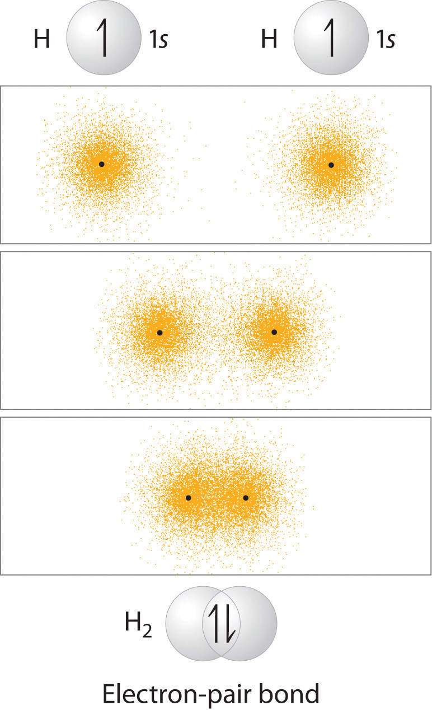The formation of H2 from two hydrogen atoms, each with a single electron in a 1s orbital, occurs as the electrons are shared to form an electron-pair bond, as indicated schematically by the gray spheres and black arrows. The orange electron density distributions show that the formation of an H2 molecule increases the electron density in the region between the two positively charged nuclei.
Although Lewis and VSEPR structures also contain localized electron-pair bonds, neither description uses an atomic orbital approach to predict the stability of the bond. Doing so forms the basis for a description of chemical bonding known as valence bond theoryA localized bonding model that assumes that the strength of a covalent bond is proportional to the amount of overlap between atomic orbitals and that an atom can use different combinations of atomic orbitals (hybrids) to maximize the overlap between bonded atoms., which is built on two assumptions:
Figure 9.11 "Three Different Ways to Form an Electron-Pair Bond" shows an electron-pair bond formed by the overlap of two ns atomic orbitals, two np atomic orbitals, and an ns and an np orbital where n = 2. Maximum overlap occurs between orbitals with the same spatial orientation and similar energies.
Figure 9.11 Three Different Ways to Form an Electron-Pair Bond
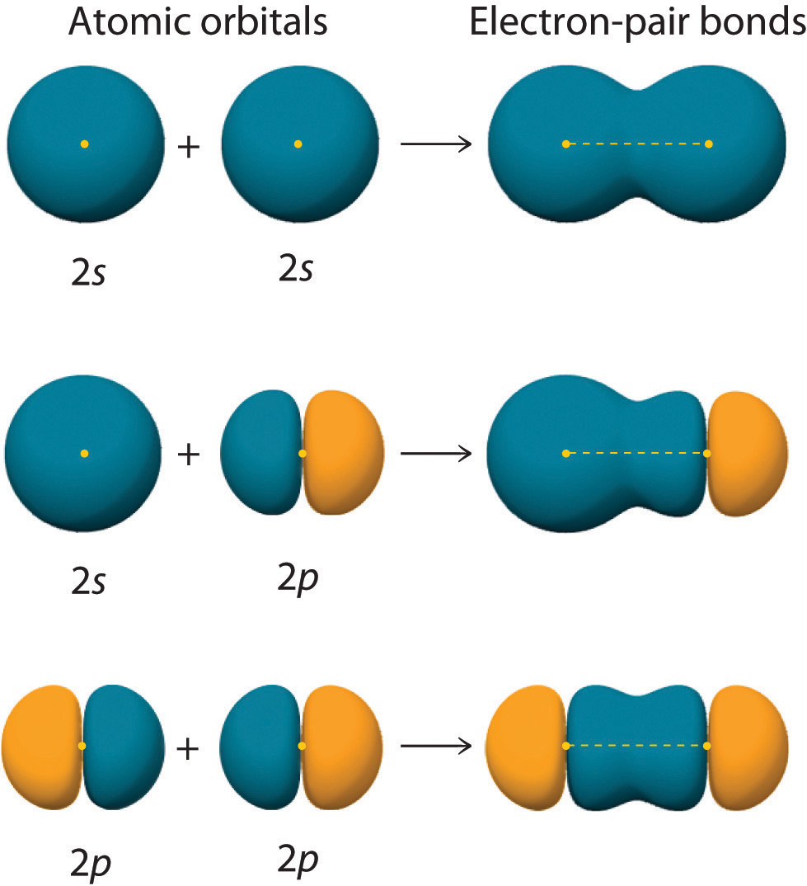An electron-pair bond can be formed by the overlap of any of the following combinations of two singly occupied atomic orbitals: two ns atomic orbitals (a), an ns and an np atomic orbital (b), and two np atomic orbitals (c) where n = 2. The positive lobe is indicated in yellow, and the negative lobe is in blue.
Let’s examine the bonds in BeH2, for example. According to the VSEPR model, BeH2 is a linear compound with four valence electrons and two Be–H bonds. Its bonding can also be described using an atomic orbital approach. Beryllium has a 1s22s2 electron configuration, and each H atom has a 1s1 electron configuration. Because the Be atom has a filled 2s subshell, however, it has no singly occupied orbitals available to overlap with the singly occupied 1s orbitals on the H atoms. If a singly occupied 1s orbital on hydrogen were to overlap with a filled 2s orbital on beryllium, the resulting bonding orbital would contain three electrons, but the maximum allowed by quantum mechanics is two. How then is beryllium able to bond to two hydrogen atoms? One way would be to add enough energy to excite one of its 2s electrons into an empty 2p orbital and reverse its spin, in a process called promotionThe excitation of an electron from a filled atomic orbital to an empty or valence orbital.:
In this excited state, the Be atom would have two singly occupied atomic orbitals (the 2s and one of the 2p orbitals), each of which could overlap with a singly occupied 1s orbital of an H atom to form an electron-pair bond. Although this would produce BeH2, the two Be–H bonds would not be equivalent: the 1s orbital of one hydrogen atom would overlap with a Be 2s orbital, and the 1s orbital of the other hydrogen atom would overlap with an orbital of a different energy, a Be 2p orbital. Experimental evidence indicates, however, that the two Be–H bonds have identical energies. To resolve this discrepancy and explain how molecules such as BeH2 form, scientists developed the concept of hybridization.
The localized bonding approach uses a process called hybridizationA process in which two or more atomic orbitals that are similar in energy but not equivalent are combined mathematically to produce sets of equivalent orbitals that are properly oriented to form bonds., in which atomic orbitals that are similar in energy but not equivalent are combined mathematically to produce sets of equivalent orbitals that are properly oriented to form bonds. These new combinations are called hybrid atomic orbitalsNew atomic orbitals formed from the process of hybridization. because they are produced by combining (hybridizing) two or more atomic orbitals from the same atom.
In BeH2, we can generate two equivalent orbitals by combining the 2s orbital of beryllium and any one of the three degenerate 2p orbitals. By taking the sum and the difference of Be 2s and 2pz atomic orbitals, for example, we produce two new orbitals with major and minor lobes oriented along the z-axes, as shown in Figure 9.12 "The Formation of ".Because the difference A − B can also be written as A + (−B), in Figure 9.12 "The Formation of " and subsequent figures we have reversed the phase(s) of the orbital being subtracted, which is the same as multiplying it by −1 and adding. This gives us Equation 9.1, where the value is needed mathematically to indicate that the 2s and 2p orbitals contribute equally to each hybrid orbital.
Equation 9.1

The position of the atomic nucleus with respect to an sp hybrid orbital. The nucleus is actually located slightly inside the minor lobe, not at the node separating the major and minor lobes.
Figure 9.12 The Formation of sp Hybrid Orbitals

Taking the mathematical sum and difference of an ns and an np atomic orbital where n = 2 gives two equivalent sp hybrid orbitals oriented at 180° to each other.
The nucleus resides just inside the minor lobe of each orbital. In this case, the new orbitals are called sp hybrids because they are formed from one s and one p orbital. The two new orbitals are equivalent in energy, and their energy is between the energy values associated with pure s and p orbitals, as illustrated in this diagram:
Each singly occupied sp hybrid orbitalThe two equivalent hybrid orbitals that result when one orbital and one orbital are combined (hybridized). The two hybrid orbitals are oriented at 180° from each other. They are equivalent in energy, and their energy is between the energy values associated with pure and pure orbitals. can now form an electron-pair bond with the singly occupied 1s atomic orbital of one of the H atoms. As shown in Figure 9.13 "Explanation of the Bonding in BeH", each sp orbital on Be has the correct orientation for the major lobes to overlap with the 1s atomic orbital of an H atom. The formation of two energetically equivalent Be–H bonds produces a linear BeH2 molecule. Thus valence bond theory does what neither the Lewis electron structure nor the VSEPR model is able to do; it explains why the bonds in BeH2 are equivalent in energy and why BeH2 has a linear geometry.
Figure 9.13 Explanation of the Bonding in BeH2 Using sp Hybrid Orbitals
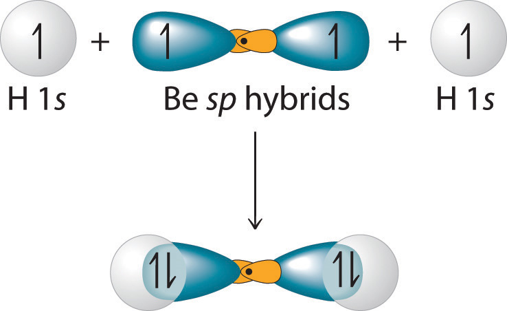Each singly occupied sp hybrid orbital on beryllium can form an electron-pair bond with the singly occupied 1s orbital of a hydrogen atom. Because the two sp hybrid orbitals are oriented at a 180° angle, the BeH2 molecule is linear.
Because both promotion and hybridization require an input of energy, the formation of a set of singly occupied hybrid atomic orbitals is energetically uphill. The overall process of forming a compound with hybrid orbitals will be energetically favorable only if the amount of energy released by the formation of covalent bonds is greater than the amount of energy used to form the hybrid orbitals (Figure 9.14 "A Hypothetical Stepwise Process for the Formation of BeH"). As we will see, some compounds are highly unstable or do not exist because the amount of energy required to form hybrid orbitals is greater than the amount of energy that would be released by the formation of additional bonds.
Figure 9.14 A Hypothetical Stepwise Process for the Formation of BeH2 from a Gaseous Be Atom and Two Gaseous H Atoms
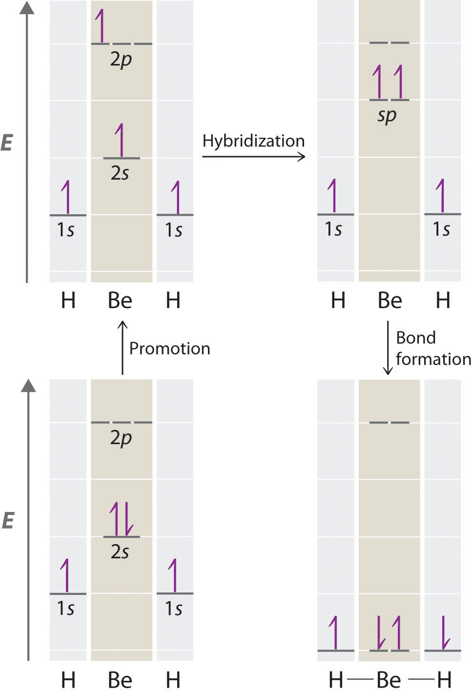The promotion of an electron from the 2s orbital of beryllium to one of the 2p orbitals is energetically uphill. The overall process of forming a BeH2 molecule from a Be atom and two H atoms will therefore be energetically favorable only if the amount of energy released by the formation of the two Be–H bonds is greater than the amount of energy required for promotion and hybridization.
The concept of hybridization also explains why boron, with a 2s22p1 valence electron configuration, forms three bonds with fluorine to produce BF3, as predicted by the Lewis and VSEPR approaches. With only a single unpaired electron in its ground state, boron should form only a single covalent bond. By the promotion of one of its 2s electrons to an unoccupied 2p orbital, however, followed by the hybridization of the three singly occupied orbitals (the 2s and two 2p orbitals), boron acquires a set of three equivalent hybrid orbitals with one electron each, as shown here:
The hybrid orbitals are degenerate and are oriented at 120° angles to each other (Figure 9.15 "Formation of "). Because the hybrid atomic orbitals are formed from one s and two p orbitals, boron is said to be sp2 hybridized (pronounced “s-p-two” or “s-p-squared”). The singly occupied sp2 hybrid atomic orbitalsThe three equivalent hybrid orbitals that result when one orbital and two orbitals are combined (hybridized). The three hybrid orbitals are oriented in a plane at 120° from each other. They are equivalent in energy, and their energy is between the energy values associated with pure and pure orbitals. can overlap with the singly occupied orbitals on each of the three F atoms to form a trigonal planar structure with three energetically equivalent B–F bonds.
Figure 9.15 Formation of sp2 Hybrid Orbitals
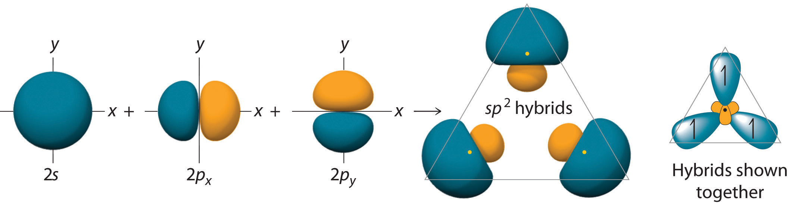Combining one ns and two np atomic orbitals gives three equivalent sp2 hybrid orbitals in a trigonal planar arrangement; that is, oriented at 120° to one another.
Looking at the 2s22p2 valence electron configuration of carbon, we might expect carbon to use its two unpaired 2p electrons to form compounds with only two covalent bonds. We know, however, that carbon typically forms compounds with four covalent bonds. We can explain this apparent discrepancy by the hybridization of the 2s orbital and the three 2p orbitals on carbon to give a set of four degenerate sp3 (“s-p-three” or “s-p-cubed”) hybrid orbitals, each with a single electron:
The large lobes of the hybridized orbitals are oriented toward the vertices of a tetrahedron, with 109.5° angles between them (Figure 9.16 "Formation of "). Like all the hybridized orbitals discussed earlier, the sp3 hybrid atomic orbitalsThe four equivalent hybrid orbitals that result when one orbital and three orbitals are combined (hybridized). The four hybrid orbitals point at the vertices of a tetrahedron, so they are oriented at 109.5° from each other. They are equivalent in energy, and their energy is between the energy values associated with pure and pure orbitals. are predicted to be equal in energy.
Figure 9.16 Formation of sp3 Hybrid Orbitals
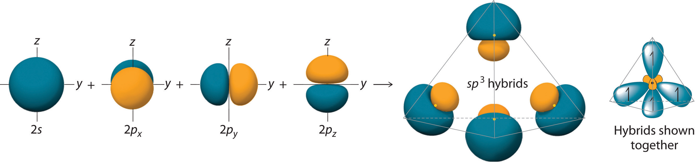Combining one ns and three np atomic orbitals results in four sp3 hybrid orbitals oriented at 109.5° to one another in a tetrahedral arrangement.
In addition to explaining why some elements form more bonds than would be expected based on their valence electron configurations, and why the bonds formed are equal in energy, valence bond theory explains why these compounds are so stable: the amount of energy released increases with the number of bonds formed. In the case of carbon, for example, much more energy is released in the formation of four bonds than two, so compounds of carbon with four bonds tend to be more stable than those with only two. Carbon does form compounds with only two covalent bonds (such as CH2 or CF2), but these species are highly reactive, unstable intermediates that form in only certain chemical reactions.
Valence bond theory explains the number of bonds formed in a compound and the relative bond strengths.
The bonding in molecules such as NH3 or H2O, which have lone pairs on the central atom, can also be described in terms of hybrid atomic orbitals. In NH3, for example, N, with a 2s22p3 valence electron configuration, can hybridize its 2s and 2p orbitals to produce four sp3 hybrid orbitals. Placing five valence electrons in the four hybrid orbitals, we obtain three that are singly occupied and one with a pair of electrons:
The three singly occupied sp3 lobes can form bonds with three H atoms, while the fourth orbital accommodates the lone pair of electrons. Similarly, H2O has an sp3 hybridized oxygen atom that uses two singly occupied sp3 lobes to bond to two H atoms, and two to accommodate the two lone pairs predicted by the VSEPR model. Such descriptions explain the approximately tetrahedral distribution of electron pairs on the central atom in NH3 and H2O. Unfortunately, however, recent experimental evidence indicates that in CH4 and NH3, the hybridized orbitals are not entirely equivalent in energy, making this bonding model an active area of research.
Use the VSEPR model to predict the number of electron pairs and molecular geometry in each compound and then describe the hybridization and bonding of all atoms except hydrogen.
Given: two chemical compounds
Asked for: number of electron pairs and molecular geometry, hybridization, and bonding
Strategy:
A Using the approach from Example 1, determine the number of electron pairs and the molecular geometry of the molecule.
B From the valence electron configuration of the central atom, predict the number and type of hybrid orbitals that can be produced. Fill these hybrid orbitals with the total number of valence electrons around the central atom and describe the hybridization.
Solution:
Exercise
Use the VSEPR model to predict the number of electron pairs and molecular geometry in each compound and then describe the hybridization and bonding of all atoms except hydrogen.
Answer:
The number of hybrid orbitals used by the central atom is the same as the number of electron pairs around the central atom.
Hybridization is not restricted to the ns and np atomic orbitals. The bonding in compounds with central atoms in the period 3 and below can also be described using hybrid atomic orbitals. In these cases, the central atom can use its valence (n − 1)d orbitals as well as its ns and np orbitals to form hybrid atomic orbitals, which allows it to accommodate five or more bonded atoms (as in PF5 and SF6). Using the ns orbital, all three np orbitals, and one (n − 1)d orbital gives a set of five sp3d hybrid orbitalsThe five hybrid orbitals that result when one three and one orbitals are combined (hybridized). that point toward the vertices of a trigonal bipyramid (part (a) in Figure 9.17 "Hybrid Orbitals Involving "). In this case, the five hybrid orbitals are not all equivalent: three form a triangular array oriented at 120° angles, and the other two are oriented at 90° to the first three and at 180° to each other.
Similarly, the combination of the ns orbital, all three np orbitals, and two nd orbitals gives a set of six equivalent sp3d2 hybrid orbitalsThe six equivalent hybrid orbitals that result when one , three , and two orbitals are combined (hybridized). oriented toward the vertices of an octahedron (part (b) in Figure 9.17 "Hybrid Orbitals Involving "). In the VSEPR model, PF5 and SF6 are predicted to be trigonal bipyramidal and octahedral, respectively, which agrees with a valence bond description in which sp3d or sp3d2 hybrid orbitals are used for bonding.
Figure 9.17 Hybrid Orbitals Involving d Orbitals
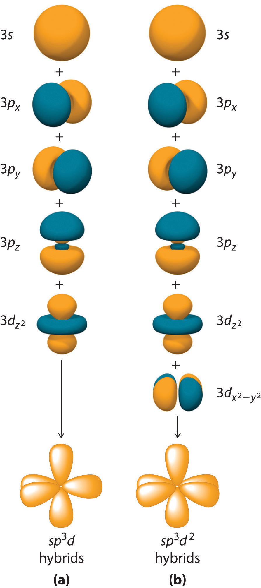The formation of a set of (a) five sp3d hybrid orbitals and (b) six sp3d2 hybrid orbitals from ns, np, and nd atomic orbitals where n = 4.
What is the hybridization of the central atom in each species? Describe the bonding in each species.
Given: three chemical species
Asked for: hybridization of the central atom
Strategy:
A Determine the geometry of the molecule using the strategy in Example 1. From the valence electron configuration of the central atom and the number of electron pairs, determine the hybridization.
B Place the total number of electrons around the central atom in the hybrid orbitals and describe the bonding.
Solution:
A The S atom in SF4 contains five electron pairs and four bonded atoms. The molecule has a seesaw structure with one lone pair:
To accommodate five electron pairs, the sulfur atom must be sp3d hybridized. B Filling these orbitals with 10 electrons gives four sp3d hybrid orbitals forming S–F bonds and one with a lone pair of electrons.
Exercise
What is the hybridization of the central atom in each species? Describe the bonding.
Answer:
Hybridization using d orbitals allows chemists to explain the structures and properties of many molecules and ions. Like most such models, however, it is not universally accepted. Nonetheless, it does explain a fundamental difference between the chemistry of the elements in the period 2 (C, N, and O) and those in period 3 and below (such as Si, P, and S).
Period 2 elements do not form compounds in which the central atom is covalently bonded to five or more atoms, although such compounds are common for the heavier elements. Thus whereas carbon and silicon both form tetrafluorides (CF4 and SiF4), only SiF4 reacts with F− to give a stable hexafluoro dianion, SiF62−. Because there are no 2d atomic orbitals, the formation of octahedral CF62− would require hybrid orbitals created from 2s, 2p, and 3d atomic orbitals. The 3d orbitals of carbon are so high in energy that the amount of energy needed to form a set of sp3d2 hybrid orbitals cannot be equaled by the energy released in the formation of two additional C–F bonds. These additional bonds are expected to be weak because the carbon atom (and other atoms in period 2) is so small that it cannot accommodate five or six F atoms at normal C–F bond lengths due to repulsions between electrons on adjacent fluorine atoms. Perhaps not surprisingly, then, species such as CF62− have never been prepared.
What is the hybridization of the oxygen atom in OF4? Is OF4 likely to exist?
Given: chemical compound
Asked for: hybridization and stability
Strategy:
A Predict the geometry of OF4 using the VSEPR model.
B From the number of electron pairs around O in OF4, predict the hybridization of O. Compare the number of hybrid orbitals with the number of electron pairs to decide whether the molecule is likely to exist.
Solution:
A The VSEPR model predicts that OF4 will have five electron pairs, resulting in a trigonal bipyramidal geometry with four bonding pairs and one lone pair. B To accommodate five electron pairs, the O atom would have to be sp3d hybridized. The only d orbital available for forming a set of sp3d hybrid orbitals is a 3d orbital, which is much higher in energy than the 2s and 2p valence orbitals of oxygen. As a result, the OF4 molecule is unlikely to exist. In fact, it has not been detected.
Exercise
What is the hybridization of the boron atom in BF63−? Is this ion likely to exist?
Answer: sp3d2 hybridization; no
The localized bonding model (called valence bond theory) assumes that covalent bonds are formed when atomic orbitals overlap and that the strength of a covalent bond is proportional to the amount of overlap. It also assumes that atoms use combinations of atomic orbitals (hybrids) to maximize the overlap with adjacent atoms. The formation of hybrid atomic orbitals can be viewed as occurring via promotion of an electron from a filled ns2 subshell to an empty np or (n − 1)d valence orbital, followed by hybridization, the combination of the orbitals to give a new set of (usually) equivalent orbitals that are oriented properly to form bonds. The combination of an ns and an np orbital gives rise to two equivalent sp hybrids oriented at 180°, whereas the combination of an ns and two or three np orbitals produces three equivalent sp2 hybrids or four equivalent sp3 hybrids, respectively. The bonding in molecules with more than an octet of electrons around a central atom can be explained by invoking the participation of one or two (n − 1)d orbitals to give sets of five sp3d or six sp3d2 hybrid orbitals, capable of forming five or six bonds, respectively. The spatial orientation of the hybrid atomic orbitals is consistent with the geometries predicted using the VSEPR model.
Arrange sp, sp3, and sp2 in order of increasing strength of the bond formed to a hydrogen atom. Explain your reasoning.
What atomic orbitals are combined to form sp3, sp, sp3d2, and sp3d? What is the maximum number of electron-pair bonds that can be formed using each set of hybrid orbitals?
Why is it incorrect to say that an atom with sp2 hybridization will form only three bonds? The carbon atom in the carbonate anion is sp2 hybridized. How many bonds to carbon are present in the carbonate ion? Which orbitals on carbon are used to form each bond?
If hybridization did not occur, how many bonds would N, O, C, and B form in a neutral molecule, and what would be the approximate molecular geometry?
How are hybridization and molecular geometry related? Which has a stronger correlation—molecular geometry and hybridization or Lewis structures and hybridization?
In the valence bond approach to bonding in BeF2, which step(s) require(s) an energy input, and which release(s) energy?
The energies of hybrid orbitals are intermediate between the energies of the atomic orbitals from which they are formed. Why?
How are lone pairs on the central atom treated using hybrid orbitals?
Because nitrogen bonds to only three hydrogen atoms in ammonia, why doesn’t the nitrogen atom use sp2 hybrid orbitals instead of sp3 hybrids?
Using arguments based on orbital hybridization, explain why the CCl62− ion does not exist.
Species such as NF52− and OF42− are unknown. If 3d atomic orbitals were much lower energy, low enough to be involved in hybrid orbital formation, what effect would this have on the stability of such species? Why? What molecular geometry, electron-pair geometry, and hybridization would be expected for each molecule?
Draw an energy-level diagram showing promotion and hybridization to describe the bonding in CH3−. How does your diagram compare with that for methane? What is the molecular geometry?
Draw an energy-level diagram showing promotion and hybridization to describe the bonding in CH3+. How does your diagram compare with that for methane? What is the molecular geometry?
Draw the molecular structure, including any lone pairs on the central atom, state the hybridization of the central atom, and determine the molecular geometry for each molecule.
Draw the molecular structure, including any lone pairs on the central atom, state the hybridization of the central atom, and determine the molecular geometry for each species.
What is the hybridization of the central atom in each of the following?
What is the hybridization of the central atom in each of the following?
What is the hybridization of the central atom in PF6−? Is this ion likely to exist? Why or why not? What would be the shape of the molecule?
What is the hybridization of the central atom in SF5−? Is this ion likely to exist? Why or why not? What would be the shape of the molecule?
The promotion and hybridization process is exactly the same as shown for CH4 in the chapter. The only difference is that the C atom uses the four singly occupied sp3 hybrid orbitals to form electron-pair bonds with only three H atoms, and an electron is added to the fourth hybrid orbital to give a charge of 1–. The electron-pair geometry is tetrahedral, but the molecular geometry is pyramidal, as in NH3.
sp2, trigonal planar
sp3, pyramidal
sp2, trigonal planar
The central atoms in CF4, CCl22–, IO3−, and SiH4 are all sp3 hybridized.
The phosphorus atom in the PF6− ion is sp3d2 hybridized, and the ion is octahedral. The PF6− ion is isoelectronic with SF6 and has essentially the same structure. It should therefore be a stable species.
None of the approaches we have described so far can adequately explain why some compounds are colored and others are not, why some substances with unpaired electrons are stable, and why others are effective semiconductors. (For more information on semiconductors, see Chapter 12 "Solids", Section 12.6 "Bonding in Metals and Semiconductors".) These approaches also cannot describe the nature of resonance. Such limitations led to the development of a new approach to bonding in which electrons are not viewed as being localized between the nuclei of bonded atoms but are instead delocalized throughout the entire molecule. Just as with the valence bond theory, the approach we are about to discuss is based on a quantum mechanical model.
In Chapter 6 "The Structure of Atoms", we described the electrons in isolated atoms as having certain spatial distributions, called orbitals, each with a particular orbital energy. Just as the positions and energies of electrons in atoms can be described in terms of atomic orbitals (AOs), the positions and energies of electrons in molecules can be described in terms of molecular orbitals (MOs)A particular spatial distribution of electrons in a molecule that is associated with a particular orbital energy.—a spatial distribution of electrons in a molecule that is associated with a particular orbital energy. As the name suggests, molecular orbitals are not localized on a single atom but extend over the entire molecule. Consequently, the molecular orbital approach, called molecular orbital theoryA delocalized bonding model in which molecular orbitals are created from the linear combination of atomic orbitals (LCAOs)., is a delocalized approach to bonding.
Molecular orbital theory is a delocalized bonding approach that explains the colors of compounds, their stability, and resonance.
Although the molecular orbital theory is computationally demanding, the principles on which it is based are similar to those we used to determine electron configurations for atoms. The key difference is that in molecular orbitals, the electrons are allowed to interact with more than one atomic nucleus at a time. Just as with atomic orbitals, we create an energy-level diagram by listing the molecular orbitals in order of increasing energy. We then fill the orbitals with the required number of valence electrons according to the Pauli principle. This means that each molecular orbital can accommodate a maximum of two electrons with opposite spins.
We begin our discussion of molecular orbitals with the simplest molecule, H2, formed from two isolated hydrogen atoms, each with a 1s1 electron configuration. As we explained in Chapter 6 "The Structure of Atoms", electrons can behave like waves. In the molecular orbital approach, the overlapping atomic orbitals are described by mathematical equations called wave functions. (For more information on wave functions, see Chapter 6 "The Structure of Atoms", Section 6.5 "Atomic Orbitals and Their Energies".) The 1s atomic orbitals on the two hydrogen atoms interact to form two new molecular orbitals, one produced by taking the sum of the two H 1s wave functions, and the other produced by taking their difference:
Equation 9.2
The molecular orbitals created from Equation 9.2 are called linear combinations of atomic orbitals (LCAOs)Molecular orbitals created from the sum and the difference of two wave functions (atomic orbitals).. A molecule must have as many molecular orbitals as there are atomic orbitals.
Adding two atomic orbitals corresponds to constructive interference between two waves, thus reinforcing their intensity; the internuclear electron probability density is increased. The molecular orbital corresponding to the sum of the two H 1s orbitals is called a σ1s combination (pronounced “sigma one ess”) (part (a) and part (b) in Figure 9.18 "Molecular Orbitals for the H"). In a sigma (σ) orbitalA bonding molecular orbital in which the electron density along the internuclear axis and between the nuclei has cylindrical symmetry., the electron density along the internuclear axis and between the nuclei has cylindrical symmetry; that is, all cross-sections perpendicular to the internuclear axis are circles. The subscript 1s denotes the atomic orbitals from which the molecular orbital was derived:The ≈ sign is used rather than an = sign because we are ignoring certain constants that are not important to our argument.
Figure 9.18 Molecular Orbitals for the H2 Molecule

(a) This diagram shows the formation of a bonding σ1s molecular orbital for H2 as the sum of the wave functions (Ψ) of two H 1s atomic orbitals. (b) This plot of the square of the wave function (Ψ2) for the bonding σ1s molecular orbital illustrates the increased electron probability density between the two hydrogen nuclei. (Recall from Chapter 6 "The Structure of Atoms" that the probability density is proportional to the square of the wave function.) (c) This diagram shows the formation of an antibonding molecular orbital for H2 as the difference of the wave functions (Ψ) of two H 1s atomic orbitals. (d) This plot of the square of the wave function (Ψ2) for the antibonding molecular orbital illustrates the node corresponding to zero electron probability density between the two hydrogen nuclei.
Equation 9.3
σ1s ≈ 1s(A) + 1s(B)Conversely, subtracting one atomic orbital from another corresponds to destructive interference between two waves, which reduces their intensity and causes a decrease in the internuclear electron probability density (part (c) and part (d) in Figure 9.18 "Molecular Orbitals for the H"). The resulting pattern contains a node where the electron density is zero. The molecular orbital corresponding to the difference is called (“sigma one ess star”). In a sigma star (σ*) orbitalAn antibonding molecular orbital in which there is a region of zero electron probability (a nodal plane) perpendicular to the internuclear axis., there is a region of zero electron probability, a nodal plane, perpendicular to the internuclear axis:
Equation 9.4
A molecule must have as many molecular orbitals as there are atomic orbitals.
The electron density in the σ1s molecular orbital is greatest between the two positively charged nuclei, and the resulting electron–nucleus electrostatic attractions reduce repulsions between the nuclei. Thus the σ1s orbital represents a bonding molecular orbitalA molecular orbital that forms when atomic orbitals or orbital lobes with the same sign interact to give increased electron probability between the nuclei due to constructive reinforcement of the wave functions.. In contrast, electrons in the orbital are generally found in the space outside the internuclear region. Because this allows the positively charged nuclei to repel one another, the orbital is an antibonding molecular orbitalA molecular orbital that forms when atomic orbitals or orbital lobes of opposite sign interact to give decreased electron probability between the nuclei due to destructuve reinforcement of the wave functions..
Antibonding orbitals contain a node perpendicular to the internuclear axis; bonding orbitals do not.
Because electrons in the σ1s orbital interact simultaneously with both nuclei, they have a lower energy than electrons that interact with only one nucleus. This means that the σ1s molecular orbital has a lower energy than either of the hydrogen 1s atomic orbitals. Conversely, electrons in the orbital interact with only one hydrogen nucleus at a time. In addition, they are farther away from the nucleus than they were in the parent hydrogen 1s atomic orbitals. Consequently, the molecular orbital has a higher energy than either of the hydrogen 1s atomic orbitals. The σ1s (bonding) molecular orbital is stabilized relative to the 1s atomic orbitals, and the (antibonding) molecular orbital is destabilized. The relative energy levels of these orbitals are shown in the energy-level diagramA schematic drawing that compares the energies of the molecular orbitals (bonding, antibonding, and nonbonding) with the energies of the parent atomic orbitals. in Figure 9.19 "Molecular Orbital Energy-Level Diagram for H".
A bonding molecular orbital is always lower in energy (more stable) than the component atomic orbitals, whereas an antibonding molecular orbital is always higher in energy (less stable).
Figure 9.19 Molecular Orbital Energy-Level Diagram for H2
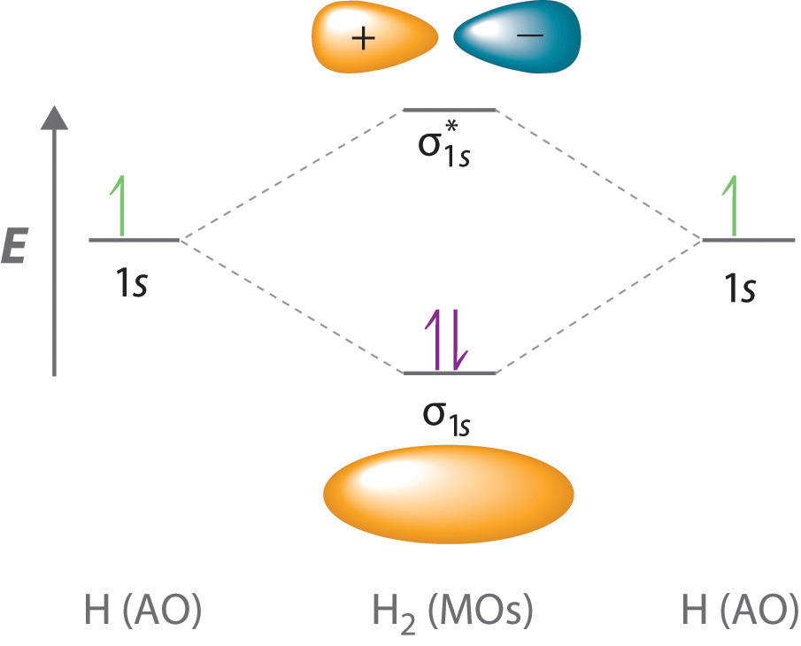The two available electrons (one from each H atom) in this diagram fill the bonding σ1s molecular orbital. Because the energy of the σ1s molecular orbital is lower than that of the two H 1s atomic orbitals, the H2 molecule is more stable (at a lower energy) than the two isolated H atoms.
To describe the bonding in a homonuclear diatomic moleculeA molecule that consists of two atoms of the same element. such as H2, we use molecular orbitals; that is, for a molecule in which two identical atoms interact, we insert the total number of valence electrons into the energy-level diagram (Figure 9.19 "Molecular Orbital Energy-Level Diagram for H"). We fill the orbitals according to the Pauli principle and Hund’s rule: each orbital can accommodate a maximum of two electrons with opposite spins, and the orbitals are filled in order of increasing energy. Because each H atom contributes one valence electron, the resulting two electrons are exactly enough to fill the σ1s bonding molecular orbital. The two electrons enter an orbital whose energy is lower than that of the parent atomic orbitals, so the H2 molecule is more stable than the two isolated hydrogen atoms. Thus molecular orbital theory correctly predicts that H2 is a stable molecule. Because bonds form when electrons are concentrated in the space between nuclei, this approach is also consistent with our earlier discussion of electron-pair bonds.
In the Lewis electron structures described in Chapter 8 "Ionic versus Covalent Bonding", the number of electron pairs holding two atoms together was called the bond order. In the molecular orbital approach, bond orderOne-half the net number of bonding electrons in a molecule. is defined as one-half the net number of bonding electrons:
Equation 9.5
To calculate the bond order of H2, we see from Figure 9.19 "Molecular Orbital Energy-Level Diagram for H" that the σ1s (bonding) molecular orbital contains two electrons, while the (antibonding) molecular orbital is empty. The bond order of H2 is therefore
Equation 9.6
This result corresponds to the single covalent bond predicted by Lewis dot symbols. Thus molecular orbital theory and the Lewis electron-pair approach agree that a single bond containing two electrons has a bond order of 1. Double and triple bonds contain four or six electrons, respectively, and correspond to bond orders of 2 and 3.
We can use energy-level diagrams such as the one in Figure 9.19 "Molecular Orbital Energy-Level Diagram for H" to describe the bonding in other pairs of atoms and ions where n = 1, such as the H2+ ion, the He2+ ion, and the He2 molecule. Again, we fill the lowest-energy molecular orbitals first while being sure not to violate the Pauli principle or Hund’s rule.
Part (a) in Figure 9.20 "Molecular Orbital Energy-Level Diagrams for Diatomic Molecules with Only 1" shows the energy-level diagram for the H2+ ion, which contains two protons and only one electron. The single electron occupies the σ1s bonding molecular orbital, giving a (σ1s)1 electron configuration. The number of electrons in an orbital is indicated by a superscript. In this case, the bond order is Because the bond order is greater than zero, the H2+ ion should be more stable than an isolated H atom and a proton. We can therefore use a molecular orbital energy-level diagram and the calculated bond order to predict the relative stability of species such as H2+. With a bond order of only the bond in H2+ should be weaker than in the H2 molecule, and the H–H bond should be longer. As shown in Table 9.1 "Molecular Orbital Electron Configurations, Bond Orders, Bond Lengths, and Bond Energies for some Simple Homonuclear Diatomic Molecules and Ions", these predictions agree with the experimental data.
Part (b) in Figure 9.20 "Molecular Orbital Energy-Level Diagrams for Diatomic Molecules with Only 1" is the molecular orbital energy-level diagram for He2+. This ion has a total of three valence electrons. Because the first two electrons completely fill the σ1s molecular orbital, the Pauli principle states that the third electron must be in the antibonding orbital, giving a electron configuration. This electron configuration gives a bond order of As with H2+, the He2+ ion should be stable, but the He–He bond should be weaker and longer than in H2. In fact, the He2+ ion can be prepared, and its properties are consistent with our predictions (Table 9.1 "Molecular Orbital Electron Configurations, Bond Orders, Bond Lengths, and Bond Energies for some Simple Homonuclear Diatomic Molecules and Ions").
Figure 9.20 Molecular Orbital Energy-Level Diagrams for Diatomic Molecules with Only 1s Atomic Orbitals
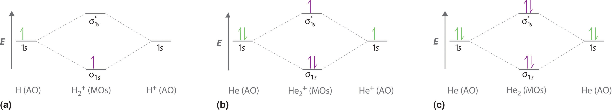(a) The H2+ ion, (b) the He2+ ion, and (c) the He2 molecule are shown here.
Table 9.1 Molecular Orbital Electron Configurations, Bond Orders, Bond Lengths, and Bond Energies for some Simple Homonuclear Diatomic Molecules and Ions
| Molecule or Ion | Electron Configuration | Bond Order | Bond Length (pm) | Bond Energy (kJ/mol) |
|---|---|---|---|---|
| H2+ | (σ1s)1 | 106 | 269 | |
| H2 | (σ1s)2 | 1 | 74 | 436 |
| He2+ | 108 | 251 | ||
| He2 | 0 | not observed | not observed |
Finally, we examine the He2 molecule, formed from two He atoms with 1s2 electron configurations. Part (c) in Figure 9.20 "Molecular Orbital Energy-Level Diagrams for Diatomic Molecules with Only 1" is the molecular orbital energy-level diagram for He2. With a total of four valence electrons, both the σ1s bonding and antibonding orbitals must contain two electrons. This gives a electron configuration, with a predicted bond order of (2 − 2) ÷ 2 = 0, which indicates that the He2 molecule has no net bond and is not a stable species. Experiments show that the He2 molecule is actually less stable than two isolated He atoms due to unfavorable electron–electron and nucleus–nucleus interactions.
In molecular orbital theory, electrons in antibonding orbitals effectively cancel the stabilization resulting from electrons in bonding orbitals. Consequently, any system that has equal numbers of bonding and antibonding electrons will have a bond order of 0, and it is predicted to be unstable and therefore not to exist in nature. In contrast to Lewis electron structures and the valence bond approach, molecular orbital theory is able to accommodate systems with an odd number of electrons, such as the H2+ ion.
In contrast to Lewis electron structures and the valence bond approach, molecular orbital theory can accommodate systems with an odd number of electrons.
Use a molecular orbital energy-level diagram, such as those in Figure 9.20 "Molecular Orbital Energy-Level Diagrams for Diatomic Molecules with Only 1", to predict the bond order in the He22+ ion. Is this a stable species?
Given: chemical species
Asked for: molecular orbital energy-level diagram, bond order, and stability
Strategy:
A Combine the two He valence atomic orbitals to produce bonding and antibonding molecular orbitals. Draw the molecular orbital energy-level diagram for the system.
B Determine the total number of valence electrons in the He22+ ion. Fill the molecular orbitals in the energy-level diagram beginning with the orbital with the lowest energy. Be sure to obey the Pauli principle and Hund’s rule while doing so.
C Calculate the bond order and predict whether the species is stable.
Solution:
A Two He 1s atomic orbitals combine to give two molecular orbitals: a σ1s bonding orbital at lower energy than the atomic orbitals and a antibonding orbital at higher energy. The bonding in any diatomic molecule with two He atoms can be described using the following molecular orbital diagram:
B The He22+ ion has only two valence electrons (two from each He atom minus two for the +2 charge). We can also view He22+ as being formed from two He+ ions, each of which has a single valence electron in the 1s atomic orbital. We can now fill the molecular orbital diagram:
The two electrons occupy the lowest-energy molecular orbital, which is the bonding (σ1s) orbital, giving a (σ1s)2 electron configuration. To avoid violating the Pauli principle, the electron spins must be paired. C So the bond order is
He22+ is therefore predicted to contain a single He–He bond. Thus it should be a stable species.
Exercise
Use a molecular orbital energy-level diagram to predict the valence-electron configuration and bond order of the H22− ion. Is this a stable species?
Answer: H22− has a valence electron configuration of with a bond order of 0. It is therefore predicted to be unstable.
So far, our discussion of molecular orbitals has been confined to the interaction of valence orbitals, which tend to lie farthest from the nucleus. When two atoms are close enough for their valence orbitals to overlap significantly, the filled inner electron shells are largely unperturbed; hence they do not need to be considered in a molecular orbital scheme. Also, when the inner orbitals are completely filled, they contain exactly enough electrons to completely fill both the bonding and antibonding molecular orbitals that arise from their interaction. Thus the interaction of filled shells always gives a bond order of 0, so filled shells are not a factor when predicting the stability of a species. This means that we can focus our attention on the molecular orbitals derived from valence atomic orbitals.
A molecular orbital diagram that can be applied to any homonuclear diatomic molecule with two identical alkali metal atoms (Li2 and Cs2, for example) is shown in part (a) in Figure 9.21 "Molecular Orbital Energy-Level Diagrams for Alkali Metal and Alkaline Earth Metal Diatomic (M", where M represents the metal atom. Only two energy levels are important for describing the valence electron molecular orbitals of these species: a σns bonding molecular orbital and a antibonding molecular orbital. Because each alkali metal (M) has an ns1 valence electron configuration, the M2 molecule has two valence electrons that fill the σns bonding orbital. As a result, a bond order of 1 is predicted for all homonuclear diatomic species formed from the alkali metals (Li2, Na2, K2, Rb2, and Cs2). The general features of these M2 diagrams are identical to the diagram for the H2 molecule in Figure 9.19 "Molecular Orbital Energy-Level Diagram for H". Experimentally, all are found to be stable in the gas phase, and some are even stable in solution.
Figure 9.21 Molecular Orbital Energy-Level Diagrams for Alkali Metal and Alkaline Earth Metal Diatomic (M2) Molecules
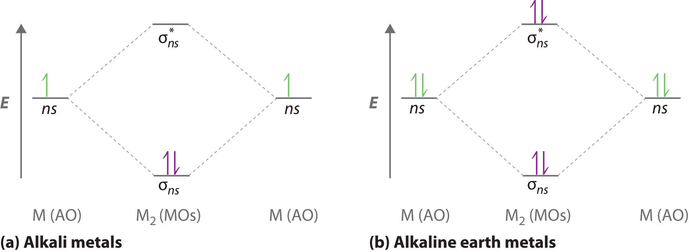(a) For alkali metal diatomic molecules, the two valence electrons are enough to fill the σns (bonding) level, giving a bond order of 1. (b) For alkaline earth metal diatomic molecules, the four valence electrons fill both the σns (bonding) and the (nonbonding) levels, leading to a predicted bond order of 0.
Similarly, the molecular orbital diagrams for homonuclear diatomic compounds of the alkaline earth metals (such as Be2), in which each metal atom has an ns2 valence electron configuration, resemble the diagram for the He2 molecule in part (c) in Figure 9.20 "Molecular Orbital Energy-Level Diagrams for Diatomic Molecules with Only 1". As shown in part (b) in Figure 9.21 "Molecular Orbital Energy-Level Diagrams for Alkali Metal and Alkaline Earth Metal Diatomic (M", this is indeed the case. All the homonuclear alkaline earth diatomic molecules have four valence electrons, which fill both the σns bonding orbital and the antibonding orbital and give a bond order of 0. Thus Be2, Mg2, Ca2, Sr2, and Ba2 are all expected to be unstable, in agreement with experimental data.In the solid state, however, all the alkali metals and the alkaline earth metals exist as extended lattices held together by metallic bonding. (For more information on metallic bonding, see Chapter 12 "Solids", Section 12.6 "Bonding in Metals and Semiconductors".) At low temperatures, Be2 is stable.
Use a qualitative molecular orbital energy-level diagram to predict the valence electron configuration, bond order, and likely existence of the Na2− ion.
Given: chemical species
Asked for: molecular orbital energy-level diagram, valence electron configuration, bond order, and stability
Strategy:
A Combine the two sodium valence atomic orbitals to produce bonding and antibonding molecular orbitals. Draw the molecular orbital energy-level diagram for this system.
B Determine the total number of valence electrons in the Na2− ion. Fill the molecular orbitals in the energy-level diagram beginning with the orbital with the lowest energy. Be sure to obey the Pauli principle and Hund’s rule while doing so.
C Calculate the bond order and predict whether the species is stable.
Solution:
A Because sodium has a [Ne]3s1 electron configuration, the molecular orbital energy-level diagram is qualitatively identical to the diagram for the interaction of two 1s atomic orbitals. B The Na2− ion has a total of three valence electrons (one from each Na atom and one for the negative charge), resulting in a filled σ3s molecular orbital, a half-filled molecular orbital, and a electron configuration.
C The bond order is With a fractional bond order, we predict that the Na2− ion exists but is highly reactive.
Exercise
Use a qualitative molecular orbital energy-level diagram to predict the valence electron configuration, bond order, and likely existence of the Ca2+ ion.
Answer: Ca2+ has a electron configuration and a bond order of and should exist.
Atomic orbitals other than ns orbitals can also interact to form molecular orbitals. Because individual p, d, and f orbitals are not spherically symmetrical, however, we need to define a coordinate system so we know which lobes are interacting in three-dimensional space. Recall from Chapter 6 "The Structure of Atoms", Section 6.5 "Atomic Orbitals and Their Energies" that for each np subshell, for example, there are npx, npy, and npz orbitals (Figure 6.25 "The Three Equivalent 2"). All have the same energy and are therefore degenerate, but they have different spatial orientations.
Just as with ns orbitals, we can form molecular orbitals from np orbitals by taking their mathematical sum and difference. When two positive lobes with the appropriate spatial orientation overlap, as illustrated for two npz atomic orbitals in part (a) in Figure 9.22 "Formation of Molecular Orbitals from ", it is the mathematical difference of their wave functions that results in constructive interference, which in turn increases the electron probability density between the two atoms. The difference therefore corresponds to a molecular orbital called a bonding molecular orbital because, just as with the σ orbitals discussed previously, it is symmetrical about the internuclear axis (in this case, the z-axis):
Equation 9.7
The other possible combination of the two npz orbitals is the mathematical sum:
Equation 9.8
In this combination, shown in part (b) in Figure 9.22 "Formation of Molecular Orbitals from ", the positive lobe of one npz atomic orbital overlaps the negative lobe of the other, leading to destructive interference of the two waves and creating a node between the two atoms. Hence this is an antibonding molecular orbital. Because it, too, is symmetrical about the internuclear axis, this molecular orbital is called a antibonding molecular orbital. Whenever orbitals combine, the bonding combination is always lower in energy (more stable) than the atomic orbitals from which it was derived, and the antibonding combination is higher in energy (less stable).
Figure 9.22 Formation of Molecular Orbitals from npz Atomic Orbitals on Adjacent Atoms
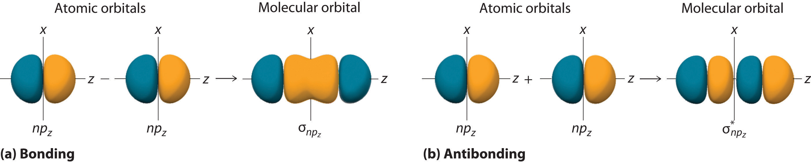(a) By convention, in a linear molecule or ion, the z-axis always corresponds to the internuclear axis, with +z to the right. As a result, the signs of the lobes of the npz atomic orbitals on the two atoms alternate − + − +, from left to right. In this case, the σ (bonding) molecular orbital corresponds to the mathematical difference, in which the overlap of lobes with the same sign results in increased probability density between the nuclei. (b) In contrast, the σ* (antibonding) molecular orbital corresponds to the mathematical sum, in which the overlap of lobes with opposite signs results in a nodal plane of zero probability density perpendicular to the internuclear axis.
Overlap of atomic orbital lobes with the same sign produces a bonding molecular orbital, regardless of whether it corresponds to the sum or the difference of the atomic orbitals.
The remaining p orbitals on each of the two atoms, npx and npy, do not point directly toward each other. Instead, they are perpendicular to the internuclear axis. If we arbitrarily label the axes as shown in Figure 9.23 "Formation of π Molecular Orbitals from ", we see that we have two pairs of np orbitals: the two npx orbitals lying in the plane of the page, and two npy orbitals perpendicular to the plane. Although these two pairs are equivalent in energy, the npx orbital on one atom can interact with only the npx orbital on the other, and the npy orbital on one atom can interact with only the npy on the other. These interactions are side-to-side rather than the head-to-head interactions characteristic of σ orbitals. Each pair of overlapping atomic orbitals again forms two molecular orbitals: one corresponds to the arithmetic sum of the two atomic orbitals and one to the difference. The sum of these side-to-side interactions increases the electron probability in the region above and below a line connecting the nuclei, so it is a bonding molecular orbital that is called a pi (π) orbitalA bonding molecular orbital formed from the side-to-side interactions of two or more parallel np atomic orbitals.. The difference results in the overlap of orbital lobes with opposite signs, which produces a nodal plane perpendicular to the internuclear axis; hence it is an antibonding molecular orbital, called a pi star (π*) orbitalAn antibonding molecular orbital formed from the difference of the side-to-side interactions of two or more parallel atomic orbitals, creating a nodal plane perpendicular to the internuclear axis..
Equation 9.9
Equation 9.10
The two npy orbitals can also combine using side-to-side interactions to produce a bonding molecular orbital and an antibonding molecular orbital. Because the npx and npy atomic orbitals interact in the same way (side-to-side) and have the same energy, the and molecular orbitals are a degenerate pair, as are the and molecular orbitals.
Figure 9.23 Formation of π Molecular Orbitals from npx and npy Atomic Orbitals on Adjacent Atoms
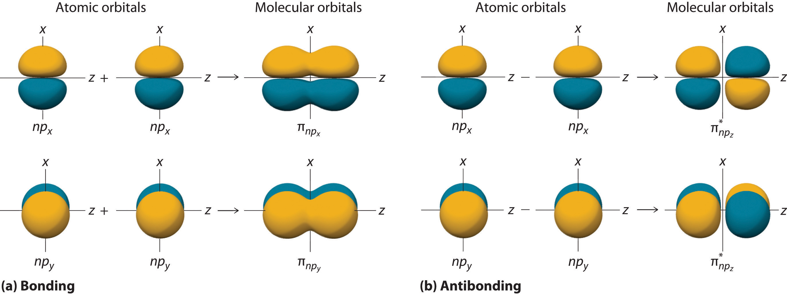(a) Because the signs of the lobes of both the npx and the npy atomic orbitals on adjacent atoms are the same, in both cases the mathematical sum corresponds to a π (bonding) molecular orbital. (b) In contrast, in both cases, the mathematical difference corresponds to a π* (antibonding) molecular orbital, with a nodal plane of zero probability density perpendicular to the internuclear axis.
Figure 9.24 "The Relative Energies of the σ and π Molecular Orbitals Derived from " is an energy-level diagram that can be applied to two identical interacting atoms that have three np atomic orbitals each. There are six degenerate p atomic orbitals (three from each atom) that combine to form six molecular orbitals, three bonding and three antibonding. The bonding molecular orbitals are lower in energy than the atomic orbitals because of the increased stability associated with the formation of a bond. Conversely, the antibonding molecular orbitals are higher in energy, as shown. The energy difference between the σ and σ* molecular orbitals is significantly greater than the difference between the two π and π* sets. The reason for this is that the atomic orbital overlap and thus the strength of the interaction are greater for a σ bond than a π bond, which means that the σ molecular orbital is more stable (lower in energy) than the π molecular orbitals.
Figure 9.24 The Relative Energies of the σ and π Molecular Orbitals Derived from npx, npy, and npz Orbitals on Identical Adjacent Atoms
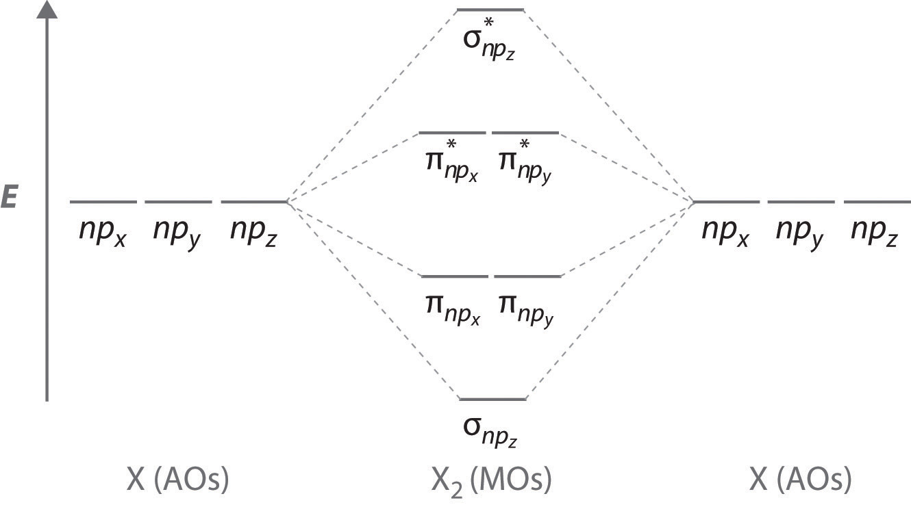Because the two npz orbitals point directly at each other, their orbital overlap is greater, so the difference in energy between the σ and σ* molecular orbitals is greater than the energy difference between the π and π* orbitals.
Although many combinations of atomic orbitals form molecular orbitals, we will discuss only one other interaction: an ns atomic orbital on one atom with an npz atomic orbital on another. As shown in Figure 9.25 "Formation of Molecular Orbitals from an ", the sum of the two atomic wave functions (ns + npz) produces a σ bonding molecular orbital. Their difference (ns − npz) produces a σ* antibonding molecular orbital, which has a nodal plane of zero probability density perpendicular to the internuclear axis.
Figure 9.25 Formation of Molecular Orbitals from an ns Atomic Orbital on One Atom and an npz Atomic Orbital on an Adjacent Atom
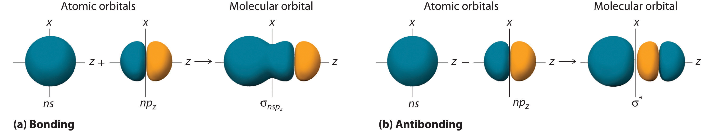(a) The mathematical sum results in a σ (bonding) molecular orbital, with increased probability density between the nuclei. (b) The mathematical difference results in a σ* (antibonding) molecular orbital, with a nodal plane of zero probability density perpendicular to the internuclear axis.
We now describe examples of systems involving period 2 homonuclear diatomic molecules, such as N2, O2, and F2. When we draw a molecular orbital diagram for a molecule, there are four key points to remember:
The number of molecular orbitals is always equal to the total number of atomic orbitals we started with.
We illustrate how to use these points by constructing a molecular orbital energy-level diagram for F2. We use the diagram in part (a) in Figure 9.26 "Molecular Orbital Energy-Level Diagrams for Homonuclear Diatomic Molecules"; the n = 1 orbitals (σ1s and ) are located well below those of the n = 2 level and are not shown. As illustrated in the diagram, the σ2s and molecular orbitals are much lower in energy than the molecular orbitals derived from the 2p atomic orbitals because of the large difference in energy between the 2s and 2p atomic orbitals of fluorine. The lowest-energy molecular orbital derived from the three 2p orbitals on each F is and the next most stable are the two degenerate orbitals, and For each bonding orbital in the diagram, there is an antibonding orbital, and the antibonding orbital is destabilized by about as much as the corresponding bonding orbital is stabilized. As a result, the orbital is higher in energy than either of the degenerate and orbitals. We can now fill the orbitals, beginning with the one that is lowest in energy.
Each fluorine has 7 valence electrons, so there are a total of 14 valence electrons in the F2 molecule. Starting at the lowest energy level, the electrons are placed in the orbitals according to the Pauli principle and Hund’s rule. Two electrons each fill the σ2s and orbitals, 2 fill the orbital, 4 fill the two degenerate π orbitals, and 4 fill the two degenerate π* orbitals, for a total of 14 electrons. To determine what type of bonding the molecular orbital approach predicts F2 to have, we must calculate the bond order. According to our diagram, there are 8 bonding electrons and 6 antibonding electrons, giving a bond order of (8 − 6) ÷ 2 = 1. Thus F2 is predicted to have a stable F–F single bond, in agreement with experimental data.
We now turn to a molecular orbital description of the bonding in O2. It so happens that the molecular orbital description of this molecule provided an explanation for a long-standing puzzle that could not be explained using other bonding models. To obtain the molecular orbital energy-level diagram for O2, we need to place 12 valence electrons (6 from each O atom) in the energy-level diagram shown in part (b) in Figure 9.26 "Molecular Orbital Energy-Level Diagrams for Homonuclear Diatomic Molecules". We again fill the orbitals according to Hund’s rule and the Pauli principle, beginning with the orbital that is lowest in energy. Two electrons each are needed to fill the σ2s and orbitals, 2 more to fill the orbital, and 4 to fill the degenerate and orbitals. According to Hund’s rule, the last 2 electrons must be placed in separate π* orbitals with their spins parallel, giving two unpaired electrons. This leads to a predicted bond order of (8 − 4) ÷ 2 = 2, which corresponds to a double bond, in agreement with experimental data (Table 8.5 "Bond Lengths and Bond Dissociation Energies for Bonds with Different Bond Orders in Selected Gas-Phase Molecules at 298 K"): the O–O bond length is 120.7 pm, and the bond energy is 498.4 kJ/mol at 298 K.
Figure 9.26 Molecular Orbital Energy-Level Diagrams for Homonuclear Diatomic Molecules
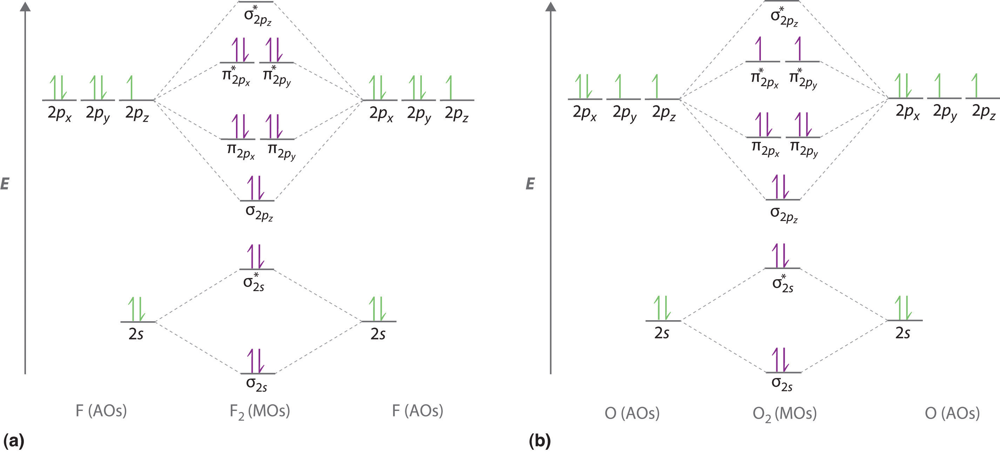(a) For F2, with 14 valence electrons (7 from each F atom), all of the energy levels except the highest, are filled. This diagram shows 8 electrons in bonding orbitals and 6 in antibonding orbitals, resulting in a bond order of 1. (b) For O2, with 12 valence electrons (6 from each O atom), there are only 2 electrons to place in the pair of orbitals. Hund’s rule dictates that one electron occupies each orbital, and their spins are parallel, giving the O2 molecule two unpaired electrons. This diagram shows 8 electrons in bonding orbitals and 4 in antibonding orbitals, resulting in a predicted bond order of 2.
None of the other bonding models can predict the presence of two unpaired electrons in O2. Chemists had long wondered why, unlike most other substances, liquid O2 is attracted into a magnetic field. As shown in Figure 9.27 "Liquid O", it actually remains suspended between the poles of a magnet until the liquid boils away. The only way to explain this behavior was for O2 to have unpaired electrons, making it paramagnetic, exactly as predicted by molecular orbital theory. This result was one of the earliest triumphs of molecular orbital theory over the other bonding approaches we have discussed.
Figure 9.27 Liquid O2 Suspended between the Poles of a Magnet

Because the O2 molecule has two unpaired electrons, it is paramagnetic. Consequently, it is attracted into a magnetic field, which allows it to remain suspended between the poles of a powerful magnet until it evaporates.
The magnetic properties of O2 are not just a laboratory curiosity; they are absolutely crucial to the existence of life. Because Earth’s atmosphere contains 20% oxygen, all organic compounds, including those that compose our body tissues, should react rapidly with air to form H2O, CO2, and N2 in an exothermic reaction. Fortunately for us, however, this reaction is very, very slow. The reason for the unexpected stability of organic compounds in an oxygen atmosphere is that virtually all organic compounds, as well as H2O, CO2, and N2, have only paired electrons, whereas oxygen has two unpaired electrons. Thus the reaction of O2 with organic compounds to give H2O, CO2, and N2 would require that at least one of the electrons on O2 change its spin during the reaction. This would require a large input of energy, an obstacle that chemists call a spin barrier. Consequently, reactions of this type are usually exceedingly slow. If they were not so slow, all organic substances, including this book and you, would disappear in a puff of smoke!
For period 2 diatomic molecules to the left of N2 in the periodic table, a slightly different molecular orbital energy-level diagram is needed because the molecular orbital is slightly higher in energy than the degenerate and orbitals. The difference in energy between the 2s and 2p atomic orbitals increases from Li2 to F2 due to increasing nuclear charge and poor screening of the 2s electrons by electrons in the 2p subshell. The bonding interaction between the 2s orbital on one atom and the 2pz orbital on the other is most important when the two orbitals have similar energies. This interaction decreases the energy of the σ2s orbital and increases the energy of the orbital. Thus for Li2, Be2, B2, C2, and N2, the orbital is higher in energy than the orbitals, as shown in Figure 9.28 "Molecular Orbital Energy-Level Diagrams for the Diatomic Molecules of the Period 2 Elements". Experimentally, it is found that the energy gap between the ns and np atomic orbitals increases as the nuclear charge increases (Figure 9.28 "Molecular Orbital Energy-Level Diagrams for the Diatomic Molecules of the Period 2 Elements"). Thus for example, the molecular orbital is at a lower energy than the pair.
Figure 9.28 Molecular Orbital Energy-Level Diagrams for the Diatomic Molecules of the Period 2 Elements
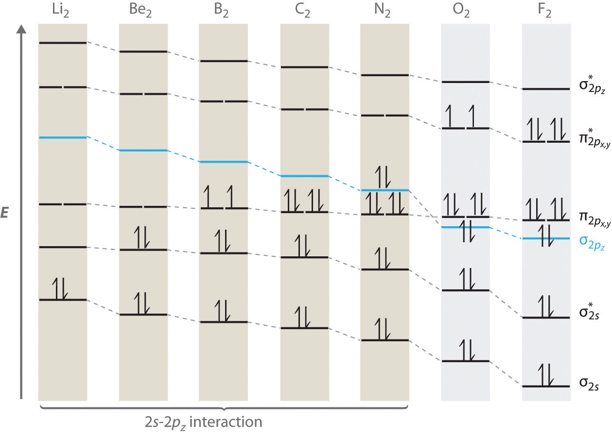Unlike earlier diagrams, only the molecular orbital energy levels for the molecules are shown here. For simplicity, the atomic orbital energy levels for the component atoms have been omitted. For Li2 through N2, the orbital is higher in energy than the orbitals. In contrast, the orbital is lower in energy than the orbitals for O2 and F2 due to the increase in the energy difference between the 2s and 2p atomic orbitals as the nuclear charge increases across the row.
Completing the diagram for N2 in the same manner as demonstrated previously, we find that the 10 valence electrons result in 8 bonding electrons and 2 antibonding electrons, for a predicted bond order of 3, a triple bond. Experimental data show that the N–N bond is significantly shorter than the F–F bond (109.8 pm in N2 versus 141.2 pm in F2), and the bond energy is much greater for N2 than for F2 (945.3 kJ/mol versus 158.8 kJ/mol, respectively). Thus the N2 bond is much shorter and stronger than the F2 bond, consistent with what we would expect when comparing a triple bond with a single bond.
Use a qualitative molecular orbital energy-level diagram to predict the electron configuration, the bond order, and the number of unpaired electrons in S2, a bright blue gas at high temperatures.
Given: chemical species
Asked for: molecular orbital energy-level diagram, bond order, and number of unpaired electrons
Strategy:
A Write the valence electron configuration of sulfur and determine the type of molecular orbitals formed in S2. Predict the relative energies of the molecular orbitals based on how close in energy the valence atomic orbitals are to one another.
B Draw the molecular orbital energy-level diagram for this system and determine the total number of valence electrons in S2.
C Fill the molecular orbitals in order of increasing energy, being sure to obey the Pauli principle and Hund’s rule.
D Calculate the bond order and describe the bonding.
Solution:
A Sulfur has a [Ne]3s23p4 valence electron configuration. To create a molecular orbital energy-level diagram similar to those in Figure 9.26 "Molecular Orbital Energy-Level Diagrams for Homonuclear Diatomic Molecules" and Figure 9.28 "Molecular Orbital Energy-Level Diagrams for the Diatomic Molecules of the Period 2 Elements", we need to know how close in energy the 3s and 3p atomic orbitals are because their energy separation will determine whether the or the molecular orbital is higher in energy. Because the ns–np energy gap increases as the nuclear charge increases (Figure 9.28 "Molecular Orbital Energy-Level Diagrams for the Diatomic Molecules of the Period 2 Elements"), the molecular orbital will be lower in energy than the pair.
B The molecular orbital energy-level diagram is as follows:
Each sulfur atom contributes 6 valence electrons, for a total of 12 valence electrons.
C Ten valence electrons are used to fill the orbitals through and , leaving 2 electrons to occupy the degenerate and pair. From Hund’s rule, the remaining 2 electrons must occupy these orbitals separately with their spins aligned. With the numbers of electrons written as superscripts, the electron configuration of S2 is with 2 unpaired electrons. The bond order is (8 − 4) ÷ 2 = 2, so we predict an S=S double bond.
Exercise
Use a qualitative molecular orbital energy-level diagram to predict the electron configuration, the bond order, and the number of unpaired electrons in the peroxide ion (O22−).
Answer: bond order of 1; no unpaired electrons
Diatomic molecules with two different atoms are called heteronuclear diatomic moleculesA molecule that consists of two atoms of different elements.. When two nonidentical atoms interact to form a chemical bond, the interacting atomic orbitals do not have the same energy. If, for example, element B is more electronegative than element A (χB > χA), the net result is a “skewed” molecular orbital energy-level diagram, such as the one shown for a hypothetical A–B molecule in Figure 9.29 "Molecular Orbital Energy-Level Diagram for a Heteronuclear Diatomic Molecule AB, Where χ". The atomic orbitals of element B are uniformly lower in energy than the corresponding atomic orbitals of element A because of the enhanced stability of the electrons in element B. The molecular orbitals are no longer symmetrical, and the energies of the bonding molecular orbitals are more similar to those of the atomic orbitals of B. Hence the electron density of bonding electrons is likely to be closer to the more electronegative atom. In this way, molecular orbital theory can describe a polar covalent bond.
Figure 9.29 Molecular Orbital Energy-Level Diagram for a Heteronuclear Diatomic Molecule AB, Where χB > χA
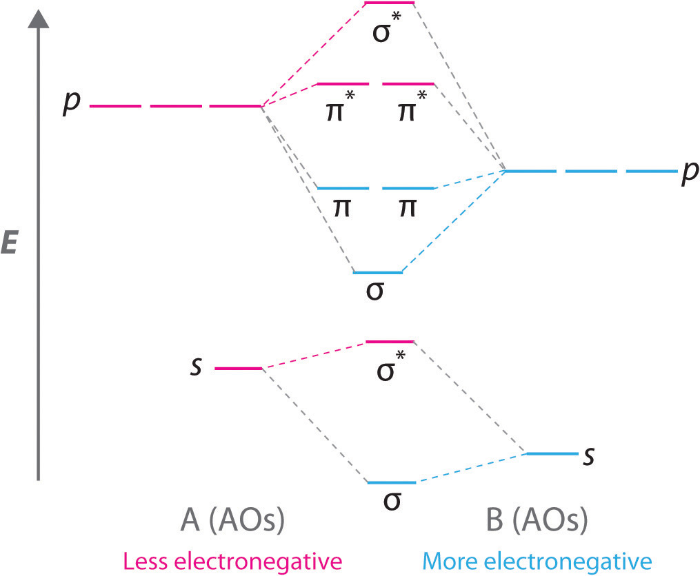The bonding molecular orbitals are closer in energy to the atomic orbitals of the more electronegative B atom. Consequently, the electrons in the bonding orbitals are not shared equally between the two atoms. On average, they are closer to the B atom, resulting in a polar covalent bond.
A molecular orbital energy-level diagram is always skewed toward the more electronegative atom.
Nitric oxide (NO) is an example of a heteronuclear diatomic molecule. The reaction of O2 with N2 at high temperatures in internal combustion engines forms nitric oxide, which undergoes a complex reaction with O2 to produce NO2, which in turn is responsible for the brown color we associate with air pollution. Recently, however, nitric oxide has also been recognized to be a vital biological messenger involved in regulating blood pressure and long-term memory in mammals.
Because NO has an odd number of valence electrons (5 from nitrogen and 6 from oxygen, for a total of 11), its bonding and properties cannot be successfully explained by either the Lewis electron-pair approach or valence bond theory. The molecular orbital energy-level diagram for NO (Figure 9.30 "Molecular Orbital Energy-Level Diagram for NO") shows that the general pattern is similar to that for the O2 molecule (see Figure 9.28 "Molecular Orbital Energy-Level Diagrams for the Diatomic Molecules of the Period 2 Elements"). Because 10 electrons are sufficient to fill all the bonding molecular orbitals derived from 2p atomic orbitals, the 11th electron must occupy one of the degenerate π* orbitals. The predicted bond order for NO is therefore . Experimental data, showing an N–O bond length of 115 pm and N–O bond energy of 631 kJ/mol, are consistent with this description. These values lie between those of the N2 and O2 molecules, which have triple and double bonds, respectively. As we stated earlier, molecular orbital theory can therefore explain the bonding in molecules with an odd number of electrons, such as NO, whereas Lewis electron structures cannot.
Figure 9.30 Molecular Orbital Energy-Level Diagram for NO
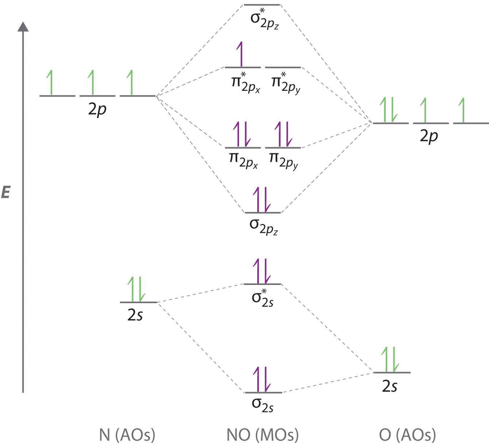Because NO has 11 valence electrons, it is paramagnetic, with a single electron occupying the pair of orbitals.
Molecular orbital theory can also tell us something about the chemistry of NO. As indicated in the energy-level diagram in Figure 9.30 "Molecular Orbital Energy-Level Diagram for NO", NO has a single electron in a relatively high-energy molecular orbital. We might therefore expect it to have similar reactivity as alkali metals such as Li and Na with their single valence electrons. In fact, NO is easily oxidized to the NO+ cation, which is isoelectronic with N2 and has a bond order of 3, corresponding to an N≡O triple bond.
Molecular orbital theory is also able to explain the presence of lone pairs of electrons. Consider, for example, the HCl molecule, whose Lewis electron structure has three lone pairs of electrons on the chlorine atom. Using the molecular orbital approach to describe the bonding in HCl, we can see from Figure 9.31 "Molecular Orbital Energy-Level Diagram for HCl" that the 1s orbital of atomic hydrogen is closest in energy to the 3p orbitals of chlorine. Consequently, the filled Cl 3s atomic orbital is not involved in bonding to any appreciable extent, and the only important interactions are those between the H 1s and Cl 3p orbitals. Of the three p orbitals, only one, designated as 3pz, can interact with the H 1s orbital. The 3px and 3py atomic orbitals have no net overlap with the 1s orbital on hydrogen, so they are not involved in bonding. Because the energies of the Cl 3s, 3px, and 3py orbitals do not change when HCl forms, they are called nonbonding molecular orbitalsA molecular orbital that forms when atomic orbitals or orbital lobes interact only very weakly, creating essentially no change in the electron probability density between the nuclei.. A nonbonding molecular orbital occupied by a pair of electrons is the molecular orbital equivalent of a lone pair of electrons. By definition, electrons in nonbonding orbitals have no effect on bond order, so they are not counted in the calculation of bond order. Thus the predicted bond order of HCl is (2 − 0) ÷ 2 = 1. Because the σ bonding molecular orbital is closer in energy to the Cl 3pz than to the H 1s atomic orbital, the electrons in the σ orbital are concentrated closer to the chlorine atom than to hydrogen. A molecular orbital approach to bonding can therefore be used to describe the polarization of the H–Cl bond to give as described in Chapter 8 "Ionic versus Covalent Bonding".
Figure 9.31 Molecular Orbital Energy-Level Diagram for HCl
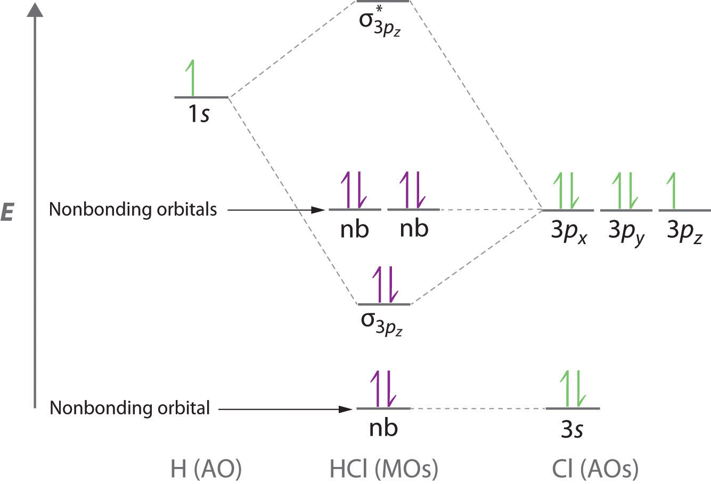The hydrogen 1s atomic orbital interacts most strongly with the 3pz orbital on chlorine, producing a bonding/antibonding pair of molecular orbitals. The other electrons on Cl are best viewed as nonbonding. As a result, only the bonding σ orbital is occupied by electrons, giving a bond order of 1.
Electrons in nonbonding molecular orbitals have no effect on bond order.
Use a “skewed” molecular orbital energy-level diagram like the one in Figure 9.29 "Molecular Orbital Energy-Level Diagram for a Heteronuclear Diatomic Molecule AB, Where χ" to describe the bonding in the cyanide ion (CN−). What is the bond order?
Given: chemical species
Asked for: “skewed” molecular orbital energy-level diagram, bonding description, and bond order
Strategy:
A Calculate the total number of valence electrons in CN−. Then place these electrons in a molecular orbital energy-level diagram like Figure 9.29 "Molecular Orbital Energy-Level Diagram for a Heteronuclear Diatomic Molecule AB, Where χ" in order of increasing energy. Be sure to obey the Pauli principle and Hund’s rule while doing so.
B Calculate the bond order and describe the bonding in CN−.
Solution:
A The CN− ion has a total of 10 valence electrons: 4 from C, 5 from N, and 1 for the −1 charge. Placing these electrons in an energy-level diagram like Figure 9.29 "Molecular Orbital Energy-Level Diagram for a Heteronuclear Diatomic Molecule AB, Where χ" fills the five lowest-energy orbitals, as shown here:
Because χN > χC, the atomic orbitals of N (on the right) are lower in energy than those of C. B The resulting valence electron configuration gives a predicted bond order of (8 − 2) ÷ 2 = 3, indicating that the CN− ion has a triple bond, analogous to that in N2.
Exercise
Use a qualitative molecular orbital energy-level diagram to describe the bonding in the hypochlorite ion (OCl−). What is the bond order?
Answer: All molecular orbitals except the highest-energy σ* are filled, giving a bond order of 1.
Although the molecular orbital approach reveals a great deal about the bonding in a given molecule, the procedure quickly becomes computationally intensive for molecules of even moderate complexity. Furthermore, because the computed molecular orbitals extend over the entire molecule, they are often difficult to represent in a way that is easy to visualize. Therefore we do not use a pure molecular orbital approach to describe the bonding in molecules or ions with more than two atoms. Instead, we use a valence bond approach and a molecular orbital approach to explain, among other things, the concept of resonance, which cannot adequately be explained using other methods.
A molecular orbital (MO) is an allowed spatial distribution of electrons in a molecule that is associated with a particular orbital energy. Unlike an atomic orbital (AO), which is centered on a single atom, a molecular orbital extends over all the atoms in a molecule or ion. Hence the molecular orbital theory of bonding is a delocalized approach. Molecular orbitals are constructed using linear combinations of atomic orbitals (LCAOs), which are usually the mathematical sums and differences of wave functions that describe overlapping atomic orbitals. Atomic orbitals interact to form three types of molecular orbitals.
A completely bonding molecular orbital contains no nodes (regions of zero electron probability) perpendicular to the internuclear axis, whereas a completely antibonding molecular orbital contains at least one node perpendicular to the internuclear axis. A sigma (σ) orbital (bonding) or a sigma star (σ*) orbital (antibonding) is symmetrical about the internuclear axis. Hence all cross-sections perpendicular to that axis are circular. Both a pi (π) orbital (bonding) and a pi star (π*) orbital (antibonding) possess a nodal plane that contains the nuclei, with electron density localized on both sides of the plane.
The energies of the molecular orbitals versus those of the parent atomic orbitals can be shown schematically in an energy-level diagram. The electron configuration of a molecule is shown by placing the correct number of electrons in the appropriate energy-level diagram, starting with the lowest-energy orbital and obeying the Pauli principle; that is, placing only two electrons with opposite spin in each orbital. From the completed energy-level diagram, we can calculate the bond order, defined as one-half the net number of bonding electrons. In bond orders, electrons in antibonding molecular orbitals cancel electrons in bonding molecular orbitals, while electrons in nonbonding orbitals have no effect and are not counted. Bond orders of 1, 2, and 3 correspond to single, double, and triple bonds, respectively. Molecules with predicted bond orders of 0 are generally less stable than the isolated atoms and do not normally exist.
Molecular orbital energy-level diagrams for diatomic molecules can be created if the electron configuration of the parent atoms is known, following a few simple rules. Most important, the number of molecular orbitals in a molecule is the same as the number of atomic orbitals that interact. The difference between bonding and antibonding molecular orbital combinations is proportional to the overlap of the parent orbitals and decreases as the energy difference between the parent atomic orbitals increases. With such an approach, the electronic structures of virtually all commonly encountered homonuclear diatomic molecules, molecules with two identical atoms, can be understood. The molecular orbital approach correctly predicts that the O2 molecule has two unpaired electrons and hence is attracted into a magnetic field. In contrast, most substances have only paired electrons. A similar procedure can be applied to molecules with two dissimilar atoms, called heteronuclear diatomic molecules, using a molecular orbital energy-level diagram that is skewed or tilted toward the more electronegative element. Molecular orbital theory is able to describe the bonding in a molecule with an odd number of electrons such as NO and even to predict something about its chemistry.
What is the distinction between an atomic orbital and a molecular orbital? How many electrons can a molecular orbital accommodate?
Why is the molecular orbital approach to bonding called a delocalized approach?
How is the energy of an electron affected by interacting with more than one positively charged atomic nucleus at a time? Does the energy of the system increase, decrease, or remain unchanged? Why?
Constructive and destructive interference of waves can be used to understand how bonding and antibonding molecular orbitals are formed from atomic orbitals. Does constructive interference of waves result in increased or decreased electron probability density between the nuclei? Is the result of constructive interference best described as a bonding molecular orbital or an antibonding molecular orbital?
What is a “node” in molecular orbital theory? How is it similar to the nodes found in atomic orbitals?
What is the difference between an s orbital and a σ orbital? How are the two similar?
Why is a σ1s molecular orbital lower in energy than the two s atomic orbitals from which it is derived? Why is a molecular orbital higher in energy than the two s atomic orbitals from which it is derived?
What is meant by the term bond order in molecular orbital theory? How is the bond order determined from molecular orbital theory different from the bond order obtained using Lewis electron structures? How is it similar?
What is the effect of placing an electron in an antibonding orbital on the bond order, the stability of the molecule, and the reactivity of a molecule?
How can the molecular orbital approach to bonding be used to predict a molecule’s stability? What advantages does this method have over the Lewis electron-pair approach to bonding?
What is the relationship between bond length and bond order? What effect do antibonding electrons have on bond length? on bond strength?
Draw a diagram that illustrates how atomic p orbitals can form both σ and π molecular orbitals. Which type of molecular orbital typically results in a stronger bond?
What is the minimum number of nodes in σ, π, σ*, and π*? How are the nodes in bonding orbitals different from the nodes in antibonding orbitals?
It is possible to form both σ and π molecular orbitals with the overlap of a d orbital with a p orbital, yet it is possible to form only σ molecular orbitals between s and d orbitals. Illustrate why this is so with a diagram showing the three types of overlap between this set of orbitals. Include a fourth image that shows why s and d orbitals cannot combine to form a π molecular orbital.
Is it possible for an npx orbital on one atom to interact with an npy orbital on another atom to produce molecular orbitals? Why or why not? Can the same be said of npy and npz orbitals on adjacent atoms?
What is meant by degenerate orbitals in molecular orbital theory? Is it possible for σ molecular orbitals to form a degenerate pair? Explain your answer.
Why are bonding molecular orbitals lower in energy than the parent atomic orbitals? Why are antibonding molecular orbitals higher in energy than the parent atomic orbitals?
What is meant by the law of conservation of orbitals?
Atomic orbitals on different atoms have different energies. When atomic orbitals from nonidentical atoms are combined to form molecular orbitals, what is the effect of this difference in energy on the resulting molecular orbitals?
If two atomic orbitals have different energies, how does this affect the orbital overlap and the molecular orbitals formed by combining the atomic orbitals?
Are the Al–Cl bonds in AlCl3 stronger, the same strength, or weaker than the Al–Br bonds in AlBr3? Why?
Are the Ga–Cl bonds in GaCl3 stronger, the same strength, or weaker than the Sb–Cl bonds in SbCl3? Why?
What is meant by a nonbonding molecular orbital, and how is it formed? How does the energy of a nonbonding orbital compare with the energy of bonding or antibonding molecular orbitals derived from the same atomic orbitals?
Many features of molecular orbital theory have analogs in Lewis electron structures. How do Lewis electron structures represent
How does electron screening affect the energy difference between the 2s and 2p atomic orbitals of the period 2 elements? How does the energy difference between the 2s and 2p atomic orbitals depend on the effective nuclear charge?
For σ versus π, π versus σ*, and σ* versus π*, which of the resulting molecular orbitals is lower in energy?
The energy of a σ molecular orbital is usually lower than the energy of a π molecular orbital derived from the same set of atomic orbitals. Under specific conditions, however, the order can be reversed. What causes this reversal? In which portion of the periodic table is this kind of orbital energy reversal most likely to be observed?
Is the molecular orbital stabilized or destabilized by interaction with the σ2s molecular orbital in N2? in O2? In which molecule is this interaction most important?
Explain how the Lewis electron-pair approach and molecular orbital theory differ in their treatment of bonding in O2.
Why is it crucial to our existence that O2 is paramagnetic?
Will NO or CO react more quickly with O2? Explain your answer.
How is the energy-level diagram of a heteronuclear diatomic molecule, such as CO, different from that of a homonuclear diatomic molecule, such as N2?
How does molecular orbital theory describe the existence of polar bonds? How is this apparent in the molecular orbital diagram of HCl?
An atomic orbital is a region of space around an atom that has a non-zero probability for an electron with a particular energy. Analogously, a molecular orbital is a region of space in a molecule that has a non-zero probability for an electron with a particular energy. Both an atomic orbital and a molecular orbital can contain two electrons.
No. Because an npx orbital on one atom is perpendicular to an npy orbital on an adjacent atom, the net overlap between the two is zero. This is also true for npy and npz orbitals on adjacent atoms.
Use a qualitative molecular orbital energy-level diagram to describe the bonding in S22−. What is the bond order? How many unpaired electrons does it have?
Use a qualitative molecular orbital energy-level diagram to describe the bonding in F22+. What is the bond order? How many unpaired electrons does it have?
If three atomic orbitals combine to form molecular orbitals, how many molecular orbitals are generated? How many molecular orbitals result from the combination of four atomic orbitals? From five?
If two atoms interact to form a bond, and each atom has four atomic orbitals, how many molecular orbitals will form?
Sketch the possible ways of combining two 1s orbitals on adjacent atoms. How many molecular orbitals can be formed by this combination? Be sure to indicate any nodal planes.
Sketch the four possible ways of combining two 2p orbitals on adjacent atoms. How many molecular orbitals can be formed by this combination? Be sure to indicate any nodal planes.
If a diatomic molecule has a bond order of 2 and six bonding electrons, how many antibonding electrons must it have? What would be the corresponding Lewis electron structure (disregarding lone pairs)? What would be the effect of a one-electron reduction on the bond distance?
What is the bond order of a diatomic molecule with six bonding electrons and no antibonding electrons? If an analogous diatomic molecule has six bonding electrons and four antibonding electrons, which has the stronger bond? the shorter bond distance? If the highest occupied molecular orbital in both molecules is bonding, how will a one-electron oxidation affect the bond length?
Qualitatively discuss how the bond distance in a diatomic molecule would be affected by adding an electron to
Explain why the oxidation of O2 decreases the bond distance, whereas the oxidation of N2 increases the N–N distance. Could Lewis electron structures be employed to answer this problem?
Draw a molecular orbital energy-level diagram for Na2+. What is the bond order in this ion? Is this ion likely to be a stable species? If not, would you recommend an oxidation or a reduction to improve stability? Explain your answer. Based on your answers, will Na2+, Na2, or Na2− be the most stable? Why?
Draw a molecular orbital energy-level diagram for Xe2+, showing only the valence orbitals and electrons. What is the bond order in this ion? Is this ion likely to be a stable species? If not, would you recommend an oxidation or a reduction to improve stability? Explain your answer. Based on your answers, will Xe22+, Xe2+, or Xe2 be most stable? Why?
Draw a molecular orbital energy-level diagram for O22− and predict its valence electron configuration, bond order, and stability.
Draw a molecular orbital energy-level diagram for C22– and predict its valence electron configuration, bond order, and stability.
If all the p orbitals in the valence shells of two atoms interact, how many molecular orbitals are formed? Why is it not possible to form three π orbitals (and the corresponding antibonding orbitals) from the set of six p orbitals?
Draw a complete energy-level diagram for B2. Determine the bond order and whether the molecule is paramagnetic or diamagnetic. Explain your rationale for the order of the molecular orbitals.
Sketch a molecular orbital energy-level diagram for each ion. Based on your diagram, what is the bond order of each species?
The diatomic molecule BN has never been detected. Assume that its molecular orbital diagram would be similar to that shown for CN− in Section 9.3 "Delocalized Bonding and Molecular Orbitals" but that the molecular orbital is higher in energy than the molecular orbitals.
Of the species BN, CO, C2, and N2, which are isoelectronic?
Of the species CN−, NO+, B22−, and O2+, which are isoelectronic?
The bond order is 1, and the ion has no unpaired electrons.
The number of molecular orbitals is always equal to the number of atomic orbitals you start with. Thus, combining three atomic orbitals gives three molecular orbitals, and combining four or five atomic orbitals will give four or five molecular orbitals, respectively.
Combining two atomic s orbitals gives two molecular orbitals, a σ (bonding) orbital with no nodal planes, and a σ* (antibonding) orbital with a nodal plane perpendicular to the internuclear axis.
Sodium contains only a single valence electron in its 3s atomic orbital. Combining two 3s atomic orbitals gives two molecular orbitals; as shown in the diagram, these are a σ (bonding) orbital and a σ* (antibonding) orbital.
Although each sodium atom contributes one valence electron, the +1 charge indicates that one electron has been removed. Placing the single electron in the lowest energy molecular orbital gives a electronic configuration and a bond order of 0.5. Consequently, Na2+ should be a stable species. Oxidizing Na2+ by one electron to give Na22+ would remove the electron in the σ3s molecular orbital, giving a bond order of 0. Conversely, reducing Na2+ by one electron to give Na2 would put an additional electron into the σ3s molecular orbital, giving a bond order of 1. Thus, reduction to Na2 would produce a more stable species than oxidation to Na22+. The Na2− ion would have two electrons in the bonding σ3s molecular orbital and one electron in the antibonding molecular orbital, giving a bond order of 0.5. Thus, Na2 is the most stable of the three species.
BN and C2 are isoelectronic, with 12 valence electrons, while N2 and CO are isoelectronic, with 14 valence electrons.
So far in our molecular orbital descriptions we have not dealt with polyatomic systems with multiple bonds. To do so, we can use an approach in which we describe σ bonding using localized electron-pair bonds formed by hybrid atomic orbitals, and π bonding using molecular orbitals formed by unhybridized np atomic orbitals.
We begin our discussion by considering the bonding in ethylene (C2H4). Experimentally, we know that the H–C–H and H–C–C angles in ethylene are approximately 120°. This angle suggests that the carbon atoms are sp2 hybridized, which means that a singly occupied sp2 orbital on one carbon overlaps with a singly occupied s orbital on each H and a singly occupied sp2 lobe on the other C. Thus each carbon forms a set of three σ bonds: two C–H (sp2 + s) and one C–C (sp2 + sp2) (part (a) in Figure 9.32 "Bonding in Ethylene"). The sp2 hybridization can be represented as follows:
Figure 9.32 Bonding in Ethylene
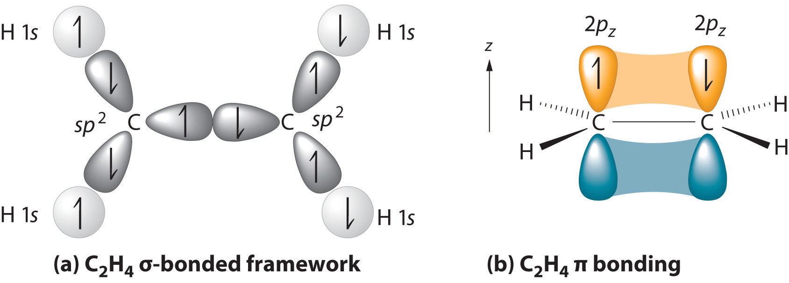(a) The σ-bonded framework is formed by the overlap of two sets of singly occupied carbon sp2 hybrid orbitals and four singly occupied hydrogen 1s orbitals to form electron-pair bonds. This uses 10 of the 12 valence electrons to form a total of five σ bonds (four C–H bonds and one C–C bond). (b) One singly occupied unhybridized 2pz orbital remains on each carbon atom to form a carbon–carbon π bond. (Note: by convention, in planar molecules the axis perpendicular to the molecular plane is the z-axis.)
After hybridization, each carbon still has one unhybridized 2pz orbital that is perpendicular to the hybridized lobes and contains a single electron (part (b) in Figure 9.32 "Bonding in Ethylene"). The two singly occupied 2pz orbitals can overlap to form a π bonding orbital and a π* antibonding orbital, which produces the energy-level diagram shown in Figure 9.33 "Molecular Orbital Energy-Level Diagram for π Bonding in Ethylene". With the formation of a π bonding orbital, electron density increases in the plane between the carbon nuclei. The π* orbital lies outside the internuclear region and has a nodal plane perpendicular to the internuclear axis. Because each 2pz orbital has a single electron, there are only two electrons, enough to fill only the bonding (π) level, leaving the π* orbital empty. Consequently, the C–C bond in ethylene consists of a σ bond and a π bond, which together give a C=C double bond. Our model is supported by the facts that the measured carbon–carbon bond is shorter than that in ethane (133.9 pm versus 153.5 pm) and the bond is stronger (728 kJ/mol versus 376 kJ/mol in ethane). The two CH2 fragments are coplanar, which maximizes the overlap of the two singly occupied 2pz orbitals.
Figure 9.33 Molecular Orbital Energy-Level Diagram for π Bonding in Ethylene
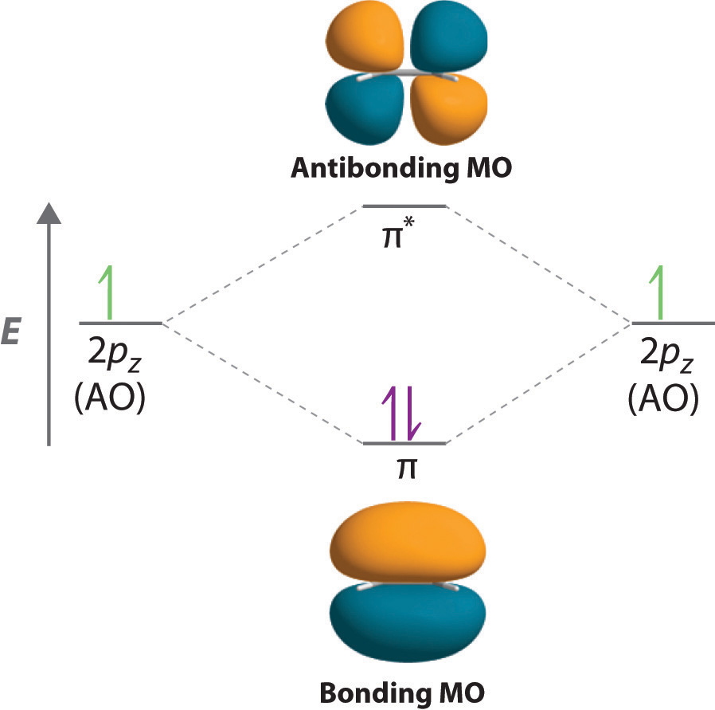As in the diatomic molecules discussed previously, the singly occupied 2pz orbitals in ethylene can overlap to form a bonding/antibonding pair of π molecular orbitals. The two electrons remaining are enough to fill only the bonding π orbital. With one σ bond plus one π bond, the carbon–carbon bond order in ethylene is 2.
Triple bonds, as in acetylene (C2H2), can also be explained using a combination of hybrid atomic orbitals and molecular orbitals. The four atoms of acetylene are collinear, which suggests that each carbon is sp hybridized. If one sp lobe on each carbon atom is used to form a C–C σ bond and one is used to form the C–H σ bond, then each carbon will still have two unhybridized 2p orbitals (a 2px,y pair), each with one electron (part (a) in Figure 9.34 "Bonding in Acetylene").
The two 2p orbitals on each carbon can align with the corresponding 2p orbitals on the adjacent carbon to simultaneously form a pair of π bonds (part (b) in Figure 9.34 "Bonding in Acetylene"). Because each of the unhybridized 2p orbitals has a single electron, four electrons are available for π bonding, which is enough to occupy only the bonding molecular orbitals. Acetylene must therefore have a carbon–carbon triple bond, which consists of a C–C σ bond and two mutually perpendicular π bonds. Acetylene does in fact have a shorter carbon–carbon bond (120.3 pm) and a higher bond energy (965 kJ/mol) than ethane and ethylene, as we would expect for a triple bond.
Figure 9.34 Bonding in Acetylene
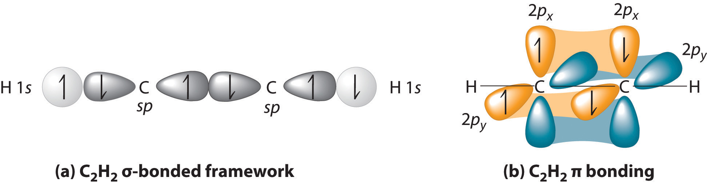(a) In the formation of the σ-bonded framework, two sets of singly occupied carbon sp hybrid orbitals and two singly occupied hydrogen 1s orbitals overlap. (b) In the formation of two carbon–carbon π bonds in acetylene, two singly occupied unhybridized 2px,y orbitals on each carbon atom overlap. With one σ bond plus two π bonds, the carbon–carbon bond order in acetylene is 3.
In complex molecules, hybrid orbitals and valence bond theory can be used to describe σ bonding, and unhybridized π orbitals and molecular orbital theory can be used to describe π bonding.
Describe the bonding in HCN using a combination of hybrid atomic orbitals and molecular orbitals. The HCN molecule is linear.
Given: chemical compound and molecular geometry
Asked for: bonding description using hybrid atomic orbitals and molecular orbitals
Strategy:
A From the geometry given, predict the hybridization in HCN. Use the hybrid orbitals to form the σ-bonded framework of the molecule and determine the number of valence electrons that are used for σ bonding.
B Determine the number of remaining valence electrons. Use any remaining unhybridized p orbitals to form π and π* orbitals.
C Fill the orbitals with the remaining electrons in order of increasing energy. Describe the bonding in HCN.
Solution:
A Because HCN is a linear molecule, it is likely that the bonding can be described in terms of sp hybridization at carbon. Because the nitrogen atom can also be described as sp hybridized, we can use one sp hybrid on each atom to form a C–N σ bond. This leaves one sp hybrid on each atom to either bond to hydrogen (C) or hold a lone pair of electrons (N). Of 10 valence electrons (5 from N, 4 from C, and 1 from H), 4 are used for σ bonding:
B We are now left with 2 electrons on N (5 valence electrons minus 1 bonding electron minus 2 electrons in the lone pair) and 2 electrons on C (4 valence electrons minus 2 bonding electrons). We have two unhybridized 2p atomic orbitals left on carbon and two on nitrogen, each occupied by a single electron. These four 2p atomic orbitals can be combined to give four molecular orbitals: two π (bonding) orbitals and two π* (antibonding) orbitals. C With 4 electrons available, only the π orbitals are filled. The overall result is a triple bond (1 σ and 2 π) between C and N.
Exercise
Describe the bonding in formaldehyde (H2C=O), a trigonal planar molecule, using a combination of hybrid atomic orbitals and molecular orbitals.
Answer:
σ-bonding framework: Carbon and oxygen are sp2 hybridized. Two sp2 hybrid orbitals on oxygen have lone pairs, two sp2 hybrid orbitals on carbon form C–H bonds, and one sp2 hybrid orbital on C and O forms a C–O σ bond.
π bonding: Unhybridized, singly occupied 2p atomic orbitals on carbon and oxygen interact to form π (bonding) and π* (antibonding) molecular orbitals. With two electrons, only the π (bonding) orbital is occupied.
In Chapter 8 "Ionic versus Covalent Bonding", we used resonance structures to describe the bonding in molecules such as ozone (O3) and the nitrite ion (NO2−). We showed that ozone can be represented by either of these Lewis electron structures:
Although the VSEPR model correctly predicts that both species are bent, it gives no information about their bond orders.
Figure 9.35 Bonding in Ozone
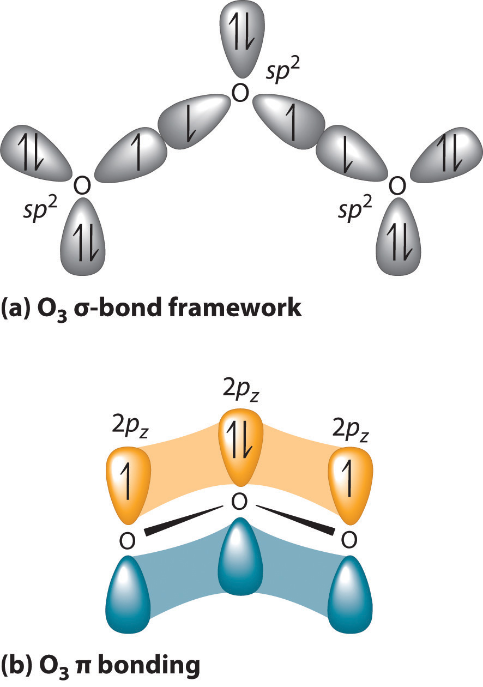(a) In the formation of the σ-bonded framework, three sets of oxygen sp2 hybrid orbitals overlap to give two O–O σ bonds and five lone pairs, two on each terminal O and one on the central O. The σ bonds and lone pairs account for 14 of the 18 valence electrons of O3. (b) One unhybridized 2pz orbital remains on each oxygen atom that is available for π bonding. The unhybridized 2pz orbital on each terminal O atom has a single electron, whereas the unhybridized 2pz orbital on the central O atom has 2 electrons.
Experimental evidence indicates that ozone has a bond angle of 117.5°. Because this angle is close to 120°, it is likely that the central oxygen atom in ozone is trigonal planar and sp2 hybridized. If we assume that the terminal oxygen atoms are also sp2 hybridized, then we obtain the σ-bonded framework shown in Figure 9.35 "Bonding in Ozone". Two of the three sp2 lobes on the central O are used to form O–O sigma bonds, and the third has a lone pair of electrons. Each terminal oxygen atom has two lone pairs of electrons that are also in sp2 lobes. In addition, each oxygen atom has one unhybridized 2p orbital perpendicular to the molecular plane. The σ bonds and lone pairs account for a total of 14 electrons (five lone pairs and two σ bonds, each containing 2 electrons). Each oxygen atom in ozone has 6 valence electrons, so O3 has a total of 18 valence electrons. Subtracting 14 electrons from the total gives us 4 electrons that must occupy the three unhybridized 2p orbitals.
With a molecular orbital approach to describe the π bonding, three 2p atomic orbitals give us three molecular orbitals, as shown in Figure 9.36 "π Bonding in Ozone". One of the molecular orbitals is a π bonding molecular orbital, which is shown as a banana-shaped region of electron density above and below the molecular plane. This region has no nodes perpendicular to the O3 plane. The molecular orbital with the highest energy has two nodes that bisect the O–O σ bonds; it is a π* antibonding orbital. The third molecular orbital contains a single node that is perpendicular to the O3 plane and passes through the central O atom; it is a nonbonding molecular orbital. Because electrons in nonbonding orbitals are neither bonding nor antibonding, they are ignored in calculating bond orders.
Figure 9.36 π Bonding in Ozone
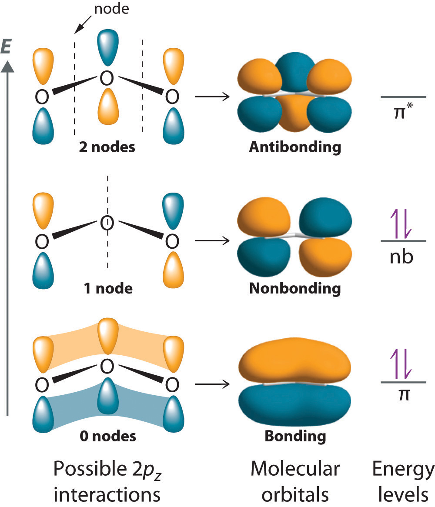The three unhybridized 2pz atomic orbitals interact with one another to form three molecular orbitals: one π bonding orbital at lower energy, one π* antibonding orbital at higher energy, and a nonbonding orbital in between. Placing four electrons in this diagram fills the bonding and nonbonding orbitals. With one filled π bonding orbital holding three atoms together, the net π bond order is per O–O bond. The combined σ/π bond order is thus for each O–O bond.
We can now place the remaining four electrons in the three energy levels shown in Figure 9.36 "π Bonding in Ozone", thereby filling the π bonding and the nonbonding levels. The result is a single π bond holding three oxygen atoms together, or bond per O–O. We therefore predict the overall O–O bond order to be ( bond plus 1 σ bond), just as predicted using resonance structures. The molecular orbital approach, however, shows that the π nonbonding orbital is localized on the terminal O atoms, which suggests that they are more electron rich than the central O atom. The reactivity of ozone is consistent with the predicted charge localization.
Resonance structures are a crude way of describing molecular orbitals that extend over more than two atoms.
Describe the bonding in the nitrite ion in terms of a combination of hybrid atomic orbitals and molecular orbitals. Lewis dot structures and the VSEPR model predict that the NO2− ion is bent.
Given: chemical species and molecular geometry
Asked for: bonding description using hybrid atomic orbitals and molecular orbitals
Strategy:
A Calculate the number of valence electrons in NO2−. From the structure, predict the type of atomic orbital hybridization in the ion.
B Predict the number and type of molecular orbitals that form during bonding. Use valence electrons to fill these orbitals and then calculate the number of electrons that remain.
C If there are unhybridized orbitals, place the remaining electrons in these orbitals in order of increasing energy. Calculate the bond order and describe the bonding.
Solution:
A The lone pair of electrons on nitrogen and a bent structure suggest that the bonding in NO2− is similar to the bonding in ozone. This conclusion is supported by the fact that nitrite also contains 18 valence electrons (5 from N and 6 from each O, plus 1 for the −1 charge). The bent structure implies that the nitrogen is sp2 hybridized.
B If we assume that the oxygen atoms are sp2 hybridized as well, then we can use two sp2 hybrid orbitals on each oxygen and one sp2 hybrid orbital on nitrogen to accommodate the five lone pairs of electrons. Two sp2 hybrid orbitals on nitrogen form σ bonds with the remaining sp2 hybrid orbital on each oxygen. The σ bonds and lone pairs account for 14 electrons. We are left with three unhybridized 2p orbitals, one on each atom, perpendicular to the plane of the molecule, and 4 electrons. Just as with ozone, these three 2p orbitals interact to form bonding, nonbonding, and antibonding π molecular orbitals. The bonding molecular orbital is spread over the nitrogen and both oxygen atoms.
C Placing 4 electrons in the energy-level diagram fills both the bonding and nonbonding molecular orbitals and gives a π bond order of 1/2 per N–O bond. The overall N–O bond order is consistent with a resonance structure.
Exercise
Describe the bonding in the formate ion (HCO2−), in terms of a combination of hybrid atomic orbitals and molecular orbitals.
Answer: Like nitrite, formate is a planar polyatomic ion with 18 valence electrons. The σ bonding framework can be described in terms of sp2 hybridized carbon and oxygen, which account for 14 electrons. The three unhybridized 2p orbitals (on C and both O atoms) form three π molecular orbitals, and the remaining 4 electrons occupy both the bonding and nonbonding π molecular orbitals. The overall C–O bond order is therefore
Hydrocarbons in which two or more carbon–carbon double bonds are directly linked by carbon–carbon single bonds are generally more stable than expected because of resonance. Because the double bonds are close enough to interact electronically with one another, the π electrons are shared over all the carbon atoms, as illustrated for 1,3-butadiene in Figure 9.37 "π Bonding in 1,3-Butadiene". As the number of interacting atomic orbitals increases, the number of molecular orbitals increases, the energy spacing between molecular orbitals decreases, and the systems become more stable (Figure 9.38 "Molecular Orbital Energy-Level Diagrams for a Chain of "). Thus as a chain of alternating double and single bonds becomes longer, the energy required to excite an electron from the highest-energy occupied (bonding) orbital to the lowest-energy unoccupied (antibonding) orbital decreases. If the chain is long enough, the amount of energy required to excite an electron corresponds to the energy of visible light. For example, vitamin A is yellow because its chain of five alternating double bonds is able to absorb violet light. Many of the colors we associate with dyes result from this same phenomenon; most dyes are organic compounds with alternating double bonds.
Figure 9.37 π Bonding in 1,3-Butadiene
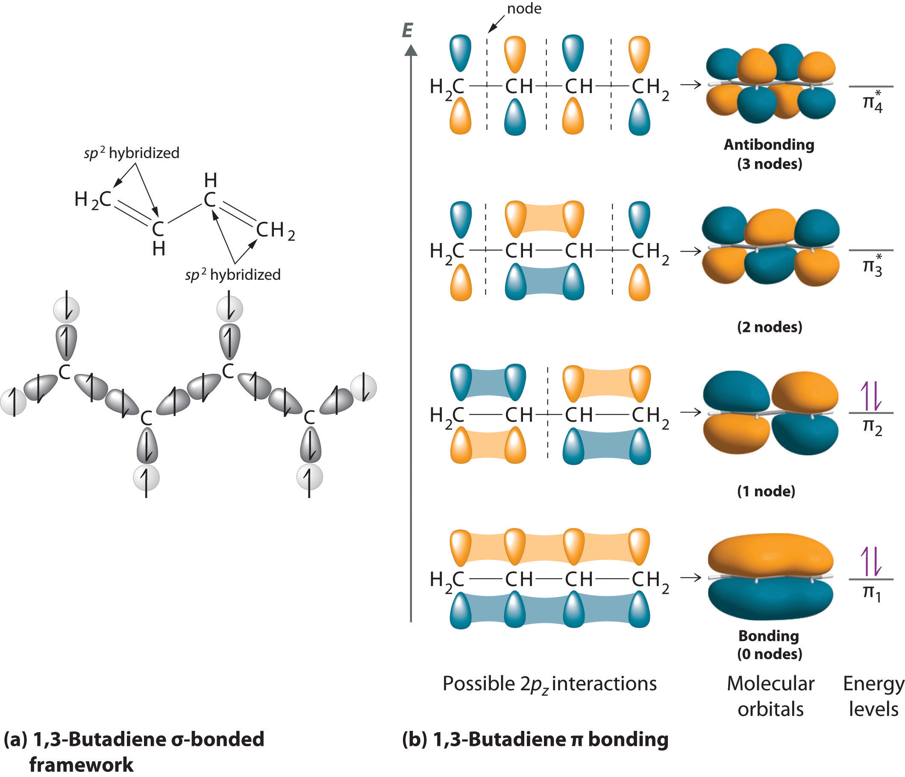(a) If each carbon atom is assumed to be sp2 hybridized, we can construct a σ-bonded framework that accounts for the C–H and C–C single bonds, leaving four singly occupied 2pz orbitals, one on each carbon atom. (b) As in ozone, these orbitals can interact, in this case to form four molecular orbitals. The molecular orbital at lowest energy is a bonding orbital with 0 nodes, the one at highest energy is antibonding with 3 nodes, and the two in the middle have 1 node and 2 nodes and are somewhere between bonding or antibonding and nonbonding, respectively. The energy of the molecular orbital increases with the number of nodes. With four electrons, only the two bonding orbitals are filled, consistent with the presence of two π bonds.
Figure 9.38 Molecular Orbital Energy-Level Diagrams for a Chain of n Like Orbitals That Interact (n ≤ 5)
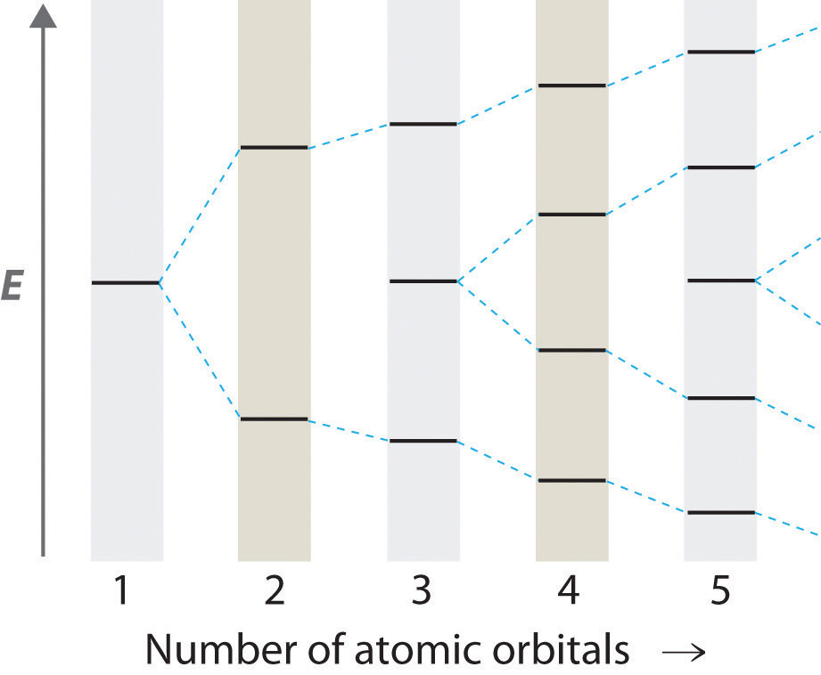As the number of atomic orbitals increases, the difference in energy between the resulting molecular orbital energy levels decreases, which allows light of lower energy to be absorbed. As a result, organic compounds with long chains of carbon atoms and alternating single and double bonds tend to become more deeply colored as the number of double bonds increases.
As the number of interacting atomic orbitals increases, the energy separation between the resulting molecular orbitals steadily decreases.
A derivative of vitamin A called retinal is used by the human eye to detect light and has a structure with alternating C=C double bonds. When visible light strikes retinal, the energy separation between the molecular orbitals is sufficiently close that the energy absorbed corresponds to the energy required to change one double bond in the molecule from cis, where like groups are on the same side of the double bond, to trans, where they are on opposite sides, initiating a process that causes a signal to be sent to the brain. If this mechanism is defective, we lose our vision in dim light. Once again, a molecular orbital approach to bonding explains a process that cannot be explained using any of the other approaches we have described.
To describe the bonding in more complex molecules with multiple bonds, we can use an approach that uses hybrid atomic orbitals to describe the σ bonding and molecular orbitals to describe the π bonding. In this approach, unhybridized np orbitals on atoms bonded to one another are allowed to interact to produce bonding, antibonding, or nonbonding combinations. For π bonds between two atoms (as in ethylene or acetylene), the resulting molecular orbitals are virtually identical to the π molecular orbitals in diatomic molecules such as O2 and N2. Applying the same approach to π bonding between three or four atoms requires combining three or four unhybridized np orbitals on adjacent atoms to generate π bonding, antibonding, and nonbonding molecular orbitals extending over all of the atoms. Filling the resulting energy-level diagram with the appropriate number of electrons explains the bonding in molecules or ions that previously required the use of resonance structures in the Lewis electron-pair approach.
What information is obtained by using the molecular orbital approach to bonding in O3 that is not obtained using the VSEPR model? Can this information be obtained using a Lewis electron-pair approach?
How is resonance explained using the molecular orbital approach?
Indicate what information can be obtained by each method:
| Lewis Electron Structures | VSEPR Model | Valence Bond Theory | Molecular Orbital Theory | |
|---|---|---|---|---|
| Geometry | ||||
| Resonance | ||||
| Orbital Hybridization | ||||
| Reactivity | ||||
| Expanded Valences | ||||
| Bond Order |
Using both a hybrid atomic orbital and molecular orbital approaches, describe the bonding in BCl3 and CS32−.
Use both a hybrid atomic orbital and molecular orbital approaches to describe the bonding in CO2 and N3−.
Problems marked with a ♦ involve multiple concepts.
♦ Sulfur hexafluoride (SF6) is a very stable gas that is used in a wide range of applications because it is nontoxic, nonflammable, and noncorrosive. Unfortunately, it is also a very powerful “greenhouse gas” that is about 22,000 times more effective at causing global warming than the same mass of CO2.
♦ The elevated concentrations of chlorine monoxide (ClO) that accompany ozone depletions in Earth’s atmosphere can be explained by a sequence of reactions. In the first step, chlorine gas is split into chlorine atoms by sunlight. Each chlorine atom then catalyzes the decomposition of ozone through a chlorine monoxide intermediate.
♦ Saccharin is an artificial sweetener that was discovered in 1879. For several decades, it was used by people who had to limit their intake of sugar for medical reasons. Because it was implicated as a carcinogen in 1977, however, warning labels are now required on foods and beverages containing saccharin. The structure of this sweetener is as follows:

♦ Pheromones are chemical signals used for communication between members of the same species. For example, the bark beetle uses an aggregation pheromone to signal other bark beetles to congregate at a particular site in a tree. Bark beetle infestations can cause severe damage because the beetles carry a fungal infection that spreads rapidly and can kill the tree. One of the components of this aggregation pheromone has the following structure:

Carbon monoxide is highly poisonous because it binds more strongly than O2 to the iron in red blood cells, which transport oxygen in the blood. Consequently, a victim of CO poisoning suffocates from a lack of oxygen. Draw a molecular orbital energy-level diagram for CO. What is the highest occupied molecular orbital? Are any of the molecular orbitals degenerate? If so, which ones?

There are six electron groups, the molecular geometry is octahedral, and the hybridization of S is sp3d2.